← 回股市觀察
逐檔技術線型分析
2026/09/22 · 成交金額上市前 50 名 ＋ 上櫃前 20 名（共 69 檔）· 公開資料整理
47800.17
加權指數 +81.33 點（+0.17%）
330 / 636
上市個股上漲／下跌家數
上漲 30.6% · 下跌 58.9% · 持平 10.5%（共 1079 檔）
270 / 513
上櫃個股上漲／下跌家數
上漲 31.0% · 下跌 58.8% · 持平 10.2%（共 872 檔）
統計範圍：當日成交金額上市前 50 名 ＋ 上櫃前 20 名（共 69 檔，皆為 4 位數代號的個股，不含 ETF／權證）。
兩個市場各自取前 N 名後合併呈現，卡片上標示市場別（上市／上櫃），清單也附市場分布。
條件統計：上市 上升趨勢：底底高 ＋ 頭頭高 12 檔、突破頸線 17 檔、底底高 14 檔、頭頭高 35 檔、站上月線 35 檔、月線向上 37 檔、外資買超 28 檔、量價攻擊（收紅＋大量） 25 檔、跌破前低（線型轉弱） 1 檔；上櫃 上升趨勢：底底高 ＋ 頭頭高 4 檔、突破頸線 8 檔、底底高 5 檔、頭頭高 15 檔、站上月線 17 檔、月線向上 16 檔、外資買超 12 檔、量價攻擊（收紅＋大量） 12 檔、跌破前低（線型轉弱） 1 檔。
五項全滿足（底底高＋頭頭高＋站上月線＋月線向上＋5 日線向上）：上市 聯電、日月光投控、禾伸堂、高力、致茂、宏致、創意；上櫃 信昌電、力旺。
資料日 2026/09/22。籌碼：上市為證交所三大法人、上櫃為櫃買中心三大法人；上櫃另附融資餘額。
每一檔都附上 K 線圖與線型說明：黃圈是轉折低點、粉圈是轉折高點、藍線是月線。
圖上兩條水平虛線、左側標數值：高點頸線（紅，連到最多「轉折高點」的那條水平線，代表上方壓力帶；收盤站上就算突破）與
低點頸線（綠，連到最多「轉折低點」的那條水平線，代表下方支撐帶；收盤跌破就算跌破）；
兩條線都只看最近 6 個轉折點、容忍同一價位帶 4%，連不到 2 個轉折點就不畫。
卡片的標籤可以點回上方對應清單，清單裡的股名也可以點到該檔。
本頁為公開資料（證交所每日收盤行情與三大法人、櫃買中心每日收盤行情與三大法人、Yahoo 股市日線）的整理與觀察，
不構成投資建議，不報牌、不預測、不下買賣決策。
大盤趨勢快篩（加權指數） 資料日 2026/09/22・來源：證交所公開資料
主狀態：突破頸線且帶量
前一交易日對照（09/21）：站上月線、月線向上（量比 20 0.96） → 今日突破頸線且帶量（量比 20 1.17）
指標、數值、判定（點開看 12 項明細：均線位置／排列、月線方向、頸線、轉折結構、位階、量價…）
加權指數今天漲 81.33 點（+0.17%），收 47,800.17、站上月線 46,537.07；月線還在上彎，已站上高點頸線 47,308.75。
- 均線位置：收盤在 MA5、MA10、MA20、MA60 之上（4 條全部站上）
- 月線方向：月線 MA20 現在 46,537.07，比 5 個交易日前高 501.38 點 → 上彎
- 量能：集中市場成交 10,787.8 億，比 5 日均量大不少（1.16 倍）、比 20 日均量大不少（1.17 倍）
- 關鍵價位：高點頸線 47,308.75已突破；低點頸線 44,592.92，還在下方 7.19%
- 大小型股：加權 +0.17%、櫃買 +0.63%，兩邊同向
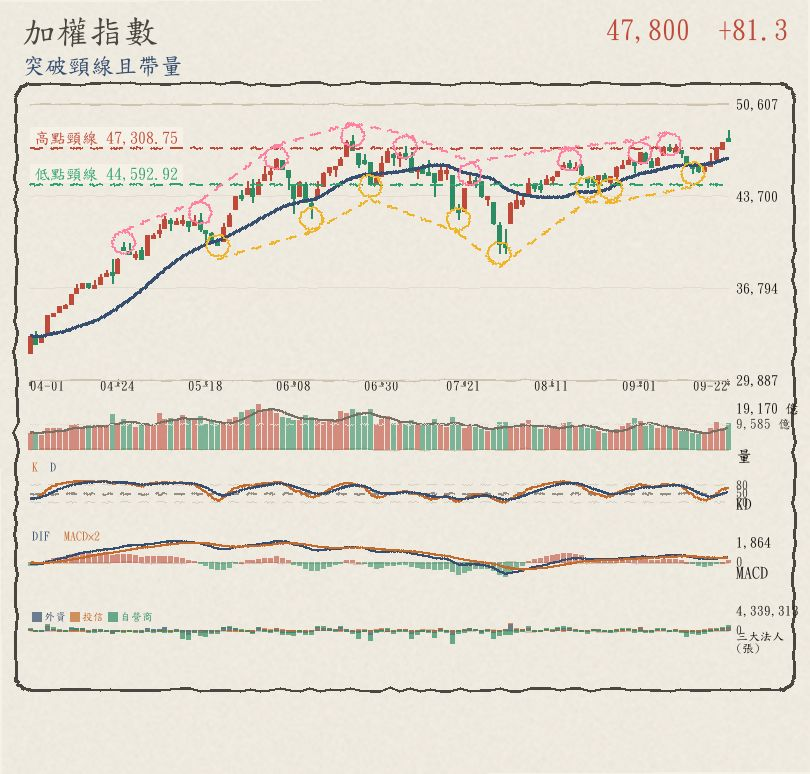
圖說：加權指數日 K（與個股圖相同標記）：黃圈＝轉折低點、粉圈＝轉折高點、虛線小圈＝還沒確認的轉折、藍線＝月線 MA20、水平虛線＝高點／低點頸線。最後一根是資料日當天。
本區塊為公開資料的技術面觀察，不構成投資建議，
不報牌、不預測、不下買賣決策。成交金額為集中市場總成交金額（含 ETF／權證），
與頁首摘要的「上市個股成交金額」口徑不同。標籤是統計，不是評分、也不是推薦。
上市 vs 上櫃（同期快篩）
加權 +0.17% vs 櫃買 +0.63%（同向） → 同向
（兩個市場分開寫，不合併成一個數字；櫃買為 TPEX 公開資料）
櫃買歷史：TPEX 逐日回補 130 根；來源：櫃買中心 www/zh-tw/indexInfo/sectinx（逐日，官方；OpenAPI tpex_index 只回當月）
（TPEX OpenAPI 只回當月，故逐日回補；歷史不足就不算該條均線並標「資料不足」，不用錯數字）
近 20 個交易日大盤狀態回溯（最新在上）（點開看逐日主狀態／量比／量價象限）
用同一支程式回算最近 20 個交易日（主狀態 S1~S8 與量比 20 皆為當日收盤當時的判定，
不是事後調整）；量比 20 未公布的日子寫「—」。
好條件最多的（前 10）
不好條件最多的（前 10）
好條件（8 項）：站上月線、月線向上、底底高、頭頭高、突破頸線、相對大盤強、外資買超、量價攻擊（收紅＋大量）。
不好條件（8 項）：跌破前低、今日下跌、相對大盤弱、在月線之下、量增下跌（出貨）、外資賣超、月線下彎、收盤跌破前一日低點。
兩邊都是同一組資料（日線結構＋當日收盤量價籌碼）算出來的「符合項目數」，只是方向相反；
條件數不是評分、也不是推薦，不構成投資建議。
上升趨勢：底底高 ＋ 頭頭高（16 上市 12／上櫃 4）
量價攻擊（收紅＋大量）（37 上市 25／上櫃 12）
逐檔分析（69 檔）
高點墊高、底部不穩 成交金額 645.85 億・全榜第 1 名（上市第 1 名）
好條件 7/8：站上月線、月線向上、頭頭高、突破頸線、相對大盤強、外資買超、量價攻擊（收紅＋大量）
不好條件 0/8：無
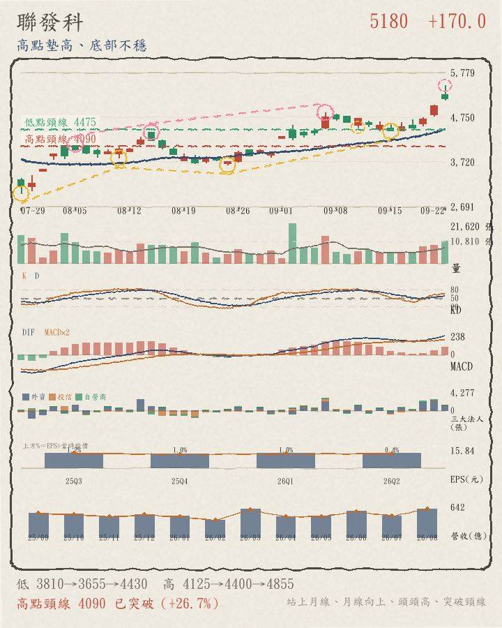
今天帶量收紅、站上月線 4469.25，已站上高點頸線 4090，高點還在墊高（但底部沒同步墊高）。
- 月線位置：收盤 5180 在月線 4469.25 之上；5 日線 4786 也在月線之上（短均在上）；月線向上、5 日線向上
- 量能：成交量是 20 日均量的 1.62 倍，比 20 日均量大不少；收紅又量增，量價配合
- 關鍵價位：高點頸線 4090 已站上；最近轉折高點 4855（高於 6.7%）；最近轉折低點 4430（高於 16.9%）
- 轉折結構：高點 4125、4400、4855 墊高 17.7%（頭頭高），但低點 3810、3655、4430 沒有同步墊高；還沒確認的轉折低點 09-10 4520；還沒確認的轉折高點 09-22 5480（圖上虛線小圈）
剛突破前高 成交金額 546.78 億・全榜第 2 名（上市第 2 名）
好條件 4/8：站上月線、月線向上、頭頭高、突破頸線
不好條件 4/8：今日下跌、相對大盤弱、量增下跌（出貨）、外資賣超
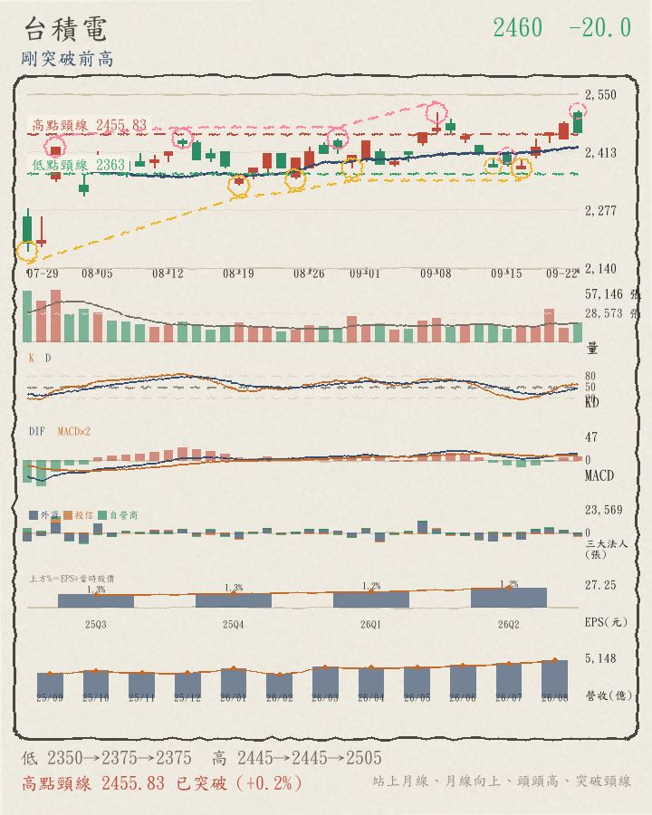
今天帶量收黑、站上月線 2425，已站上高點頸線 2455.83，高點還在墊高（但底部沒同步墊高）。
- 月線位置：收盤 2460 在月線 2425 之上；5 日線 2441 也在月線之上（短均在上）；月線向上、5 日線向上
- 量能：成交量是 20 日均量的 1.14 倍，比 20 日均量大一些；收黑卻量增，量價背離
- 關鍵價位：高點頸線 2455.83 已站上；最近轉折高點 2505（低於 1.8%）；最近轉折低點 2375（高於 3.6%）
- 轉折結構：高點 2445、2445、2505 墊高 0.2%（頭頭高），但低點 2350、2375、2375 沒有同步墊高；還沒確認的轉折低點 09-14 2380；還沒確認的轉折高點 09-15 2405、09-22 2510（圖上虛線小圈）
上升趨勢（底底高＋頭頭高） 成交金額 469.92 億・全榜第 3 名（上市第 3 名）
好條件 8/8：站上月線、月線向上、底底高、頭頭高、突破頸線、相對大盤強、外資買超、量價攻擊（收紅＋大量）
不好條件 0/8：無
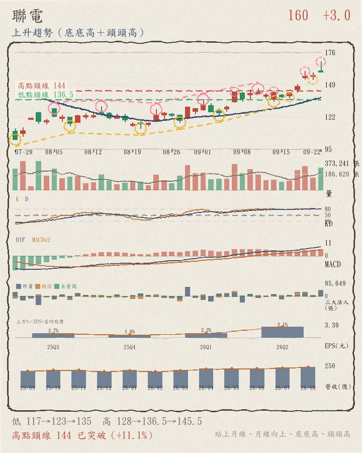
今天帶量收紅、站上月線 138.125，已站上高點頸線 144，轉折結構仍是底底高＋頭頭高。
- 月線位置：收盤 160 在月線 138.125 之上；5 日線 152.5 也在月線之上（短均在上）；月線向上、5 日線向上
- 量能：成交量是 20 日均量的 1.52 倍，比 20 日均量大不少；收紅又量增，量價配合
- 關鍵價位：高點頸線 144 已站上；最近轉折高點 145.5（高於 10.0%）；最近轉折低點 135（高於 18.5%）
- 轉折結構：低點 117、123、135 一路墊高 15.4%、高點 128、136.5、145.5 也一路墊高 13.7%，是底底高＋頭頭高；還沒確認的轉折低點 09-16 138、09-21 153；還沒確認的轉折高點 09-18 160.5、09-22 168.5（圖上虛線小圈）
剛突破前高 成交金額 421.47 億・全榜第 4 名（上市第 4 名）
好條件 7/8：站上月線、月線向上、頭頭高、突破頸線、相對大盤強、外資買超、量價攻擊（收紅＋大量）
不好條件 0/8：無
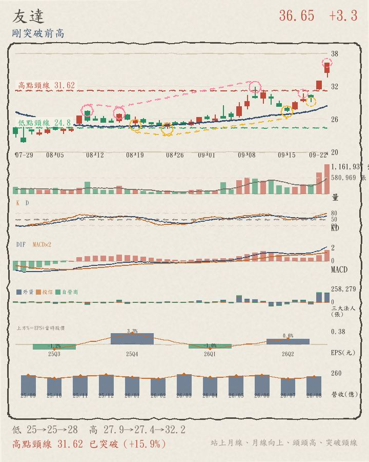
今天帶量收紅、站上月線 28.798，已站上高點頸線 31.62，高點還在墊高（但底部沒同步墊高）。
- 月線位置：收盤 36.65 在月線 28.798 之上；5 日線 31.95 也在月線之上（短均在上）；月線向上、5 日線向上
- 量能：成交量是 20 日均量的 3.62 倍，比 20 日均量大不少；收紅又量增，量價配合
- 關鍵價位：高點頸線 31.62 已站上；最近轉折高點 32.2（高於 13.8%）；最近轉折低點 27.75（高於 32.1%）
- 轉折結構：高點 27.9、27.4、32.2 墊高 13.8%（頭頭高），但低點 25.25、24.6、27.75 沒有同步墊高；還沒確認的轉折低點 09-18 29.5；還沒確認的轉折高點 09-17 31.05、09-22 36.65（圖上虛線小圈）
剛突破前高 成交金額 326.19 億・全榜第 5 名（上市第 5 名）
好條件 5/8：站上月線、月線向上、頭頭高、相對大盤強、量價攻擊（收紅＋大量）
不好條件 1/8：外資賣超
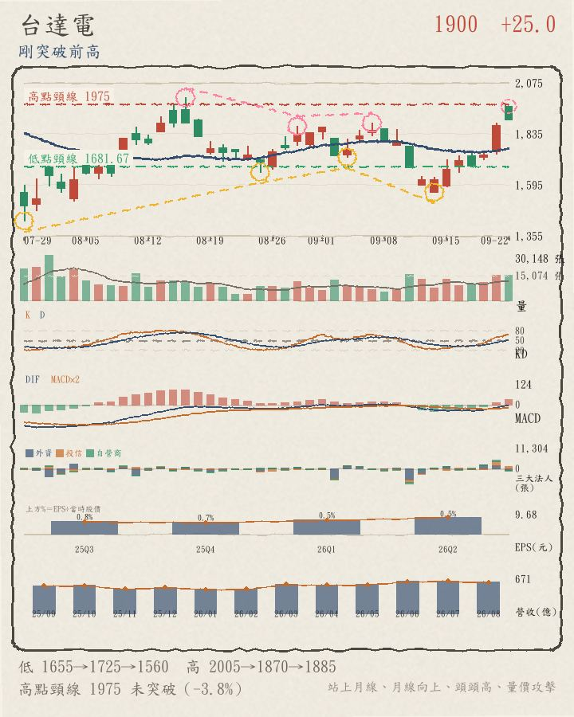
今天帶量收紅、站上月線 1765.5，離高點頸線 1975 還差 3.8%，高點還在墊高（但底部沒同步墊高）。
- 月線位置：收盤 1900 在月線 1765.5 之上；5 日線 1781 也在月線之上（短均在上）；月線向上、5 日線向上
- 量能：成交量是 20 日均量的 1.62 倍，比 20 日均量大不少；收紅又量增，量價配合
- 關鍵價位：高點頸線 1975 還沒突破，差 3.8%；最近轉折高點 1885（高於 0.8%）；最近轉折低點 1560（高於 21.8%）
- 轉折結構：高點 2005、1870、1885 墊高 4.2%（頭頭高），但低點 1655、1725、1560 沒有同步墊高；還沒確認的轉折高點 09-22 1965（圖上虛線小圈）
區間或轉弱 成交金額 321.74 億・全榜第 6 名（上市第 6 名）
好條件 0/8：無
不好條件 6/8：今日下跌、相對大盤弱、在月線之下、外資賣超、月線下彎、收盤跌破前一日低點
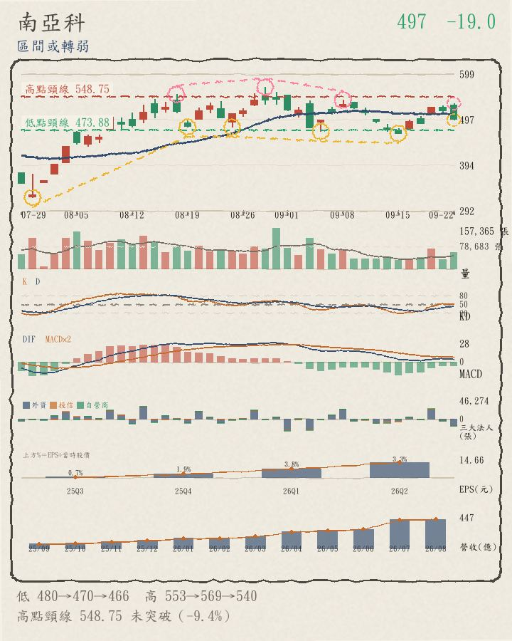
今天收黑、跌破月線 509.325，離高點頸線 548.75 還差 9.4%，轉折還沒走出明顯方向。
- 月線位置：收盤 497 在月線 509.325 之下；5 日線 503.7 也在月線之下（短均在下）；月線走平或向下、5 日線向上
- 量能：成交量是 20 日均量的 0.99 倍，跟 20 日均量差不多
- 關鍵價位：高點頸線 548.75 還沒突破，差 9.4%；最近轉折高點 540（低於 8.0%）；最近轉折低點 465.5（高於 6.8%）
- 轉折結構：低點 480、470、465.5 與高點 553、569、540 都沒有明顯遞增，屬於區間震盪或轉弱；還沒確認的轉折低點 09-22 496；還沒確認的轉折高點 09-22 533（圖上虛線小圈）
剛突破前高 成交金額 262.07 億・全榜第 7 名（上市第 7 名）
好條件 7/8：站上月線、月線向上、頭頭高、突破頸線、相對大盤強、外資買超、量價攻擊（收紅＋大量）
不好條件 0/8：無
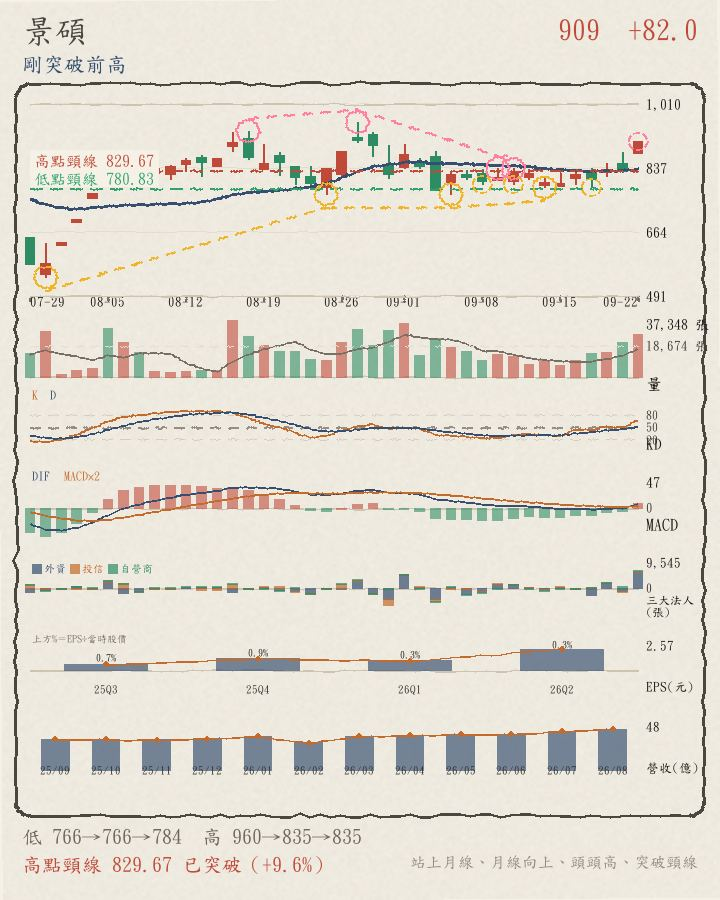
今天帶量收紅、站上月線 834.4，已站上高點頸線 829.67，高點還在墊高（但底部沒同步墊高）。
- 月線位置：收盤 909 在月線 834.4 之上；5 日線 838.6 也在月線之上（短均在上）；月線向上、5 日線向上
- 量能：成交量是 20 日均量的 1.57 倍，比 20 日均量大不少；收紅又量增，量價配合
- 關鍵價位：高點頸線 829.67 已站上；最近轉折高點 835（高於 8.9%）；最近轉折低點 784（高於 15.9%）
- 轉折結構：高點 960、835、835 墊高 8.9%（頭頭高），但低點 766、766、784 沒有同步墊高；還沒確認的轉折低點 09-10 792、09-17 785；還沒確認的轉折高點 09-22 909（圖上虛線小圈）
剛突破前高 成交金額 258.15 億・全榜第 8 名（上市第 8 名）
好條件 6/8：站上月線、月線向上、頭頭高、相對大盤強、外資買超、量價攻擊（收紅＋大量）
不好條件 0/8：無
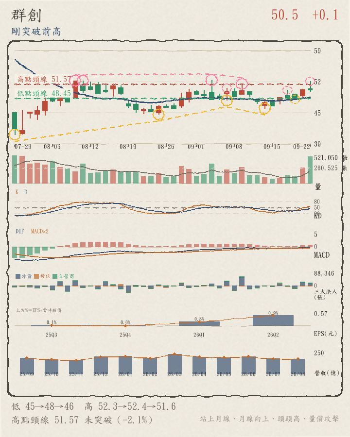
今天帶量收紅、站上月線 48.637，離高點頸線 51.57 還差 2.1%，高點還在墊高（但底部沒同步墊高）。
- 月線位置：收盤 50.5 在月線 48.637 之上；5 日線 49.27 也在月線之上（短均在上）；月線向上、5 日線向上
- 量能：成交量是 20 日均量的 2.75 倍，比 20 日均量大不少；收紅又量增，量價配合
- 關鍵價位：高點頸線 51.57 還沒突破，差 2.1%；最近轉折高點 51.6（低於 2.1%）；最近轉折低點 46.25（高於 9.2%）
- 轉折結構：高點 52.3、52.4、51.6 墊高 1.2%（頭頭高），但低點 44.95、48、46.25 沒有同步墊高；還沒確認的轉折低點 09-18 48.25；還沒確認的轉折高點 09-17 50.2、09-22 52.2（圖上虛線小圈）
區間或轉弱 成交金額 246.41 億・全榜第 9 名（上市第 9 名）
好條件 4/8：站上月線、相對大盤強、外資買超、量價攻擊（收紅＋大量）
不好條件 1/8：月線下彎
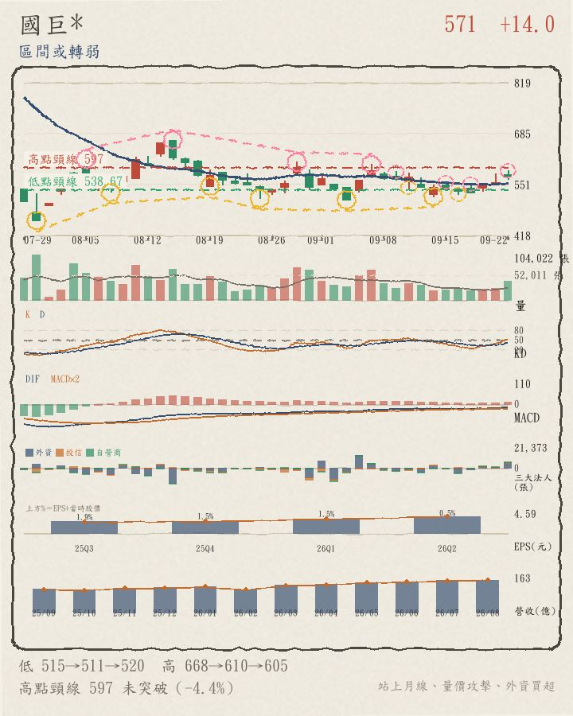
今天帶量收紅、站上月線 553.85，離高點頸線 597 還差 4.4%，轉折還沒走出明顯方向。
- 月線位置：收盤 571 在月線 553.85 之上；5 日線 548.6 也在月線之下（短均在下）；月線走平或向下、5 日線走平或向下
- 量能：成交量是 20 日均量的 1.13 倍，比 20 日均量大一些；收紅又量增，量價配合
- 關鍵價位：高點頸線 597 還沒突破，差 4.4%；最近轉折高點 605（低於 5.6%）；最近轉折低點 520（高於 9.8%）
- 轉折結構：低點 515、511、520 與高點 668、610、605 都沒有明顯遞增，屬於區間震盪或轉弱；還沒確認的轉折低點 09-10 543、09-16 526；還沒確認的轉折高點 09-17 553、09-22 588（圖上虛線小圈）
剛突破前高 成交金額 232.56 億・全榜第 10 名（上市第 10 名）
好條件 7/8：站上月線、月線向上、頭頭高、突破頸線、相對大盤強、外資買超、量價攻擊（收紅＋大量）
不好條件 0/8：無
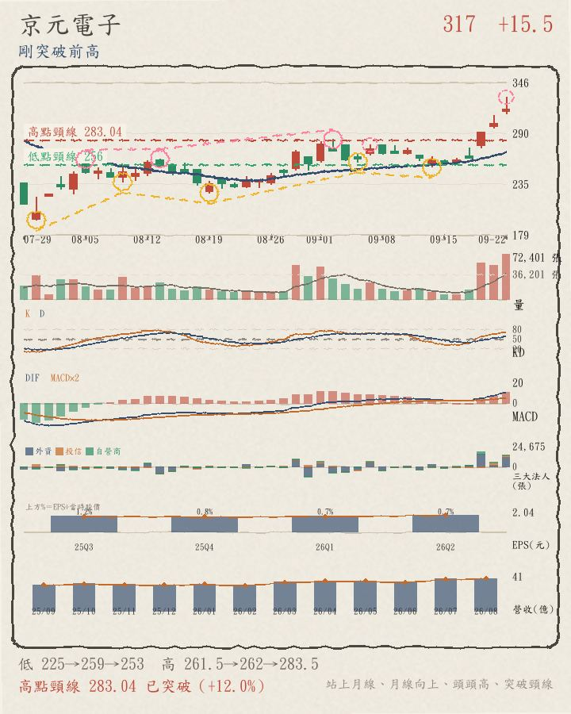
今天帶量收紅、站上月線 269.6，已站上高點頸線 283.04，高點還在墊高（但底部沒同步墊高）。
- 月線位置：收盤 317 在月線 269.6 之上；5 日線 287.3 也在月線之上（短均在上）；月線向上、5 日線向上
- 量能：成交量是 20 日均量的 2.98 倍，比 20 日均量大不少；收紅又量增，量價配合
- 關鍵價位：高點頸線 283.04 已站上；最近轉折高點 283.5（高於 11.8%）；最近轉折低點 253（高於 25.3%）
- 轉折結構：高點 261.5、262、283.5 墊高 16.4%（頭頭高），但低點 225、259、253 沒有同步墊高；還沒確認的轉折高點 09-07 278、09-22 330（圖上虛線小圈）
上升趨勢（底底高＋頭頭高） 成交金額 224.11 億・全榜第 11 名（上市第 11 名）
好條件 7/8：站上月線、月線向上、底底高、頭頭高、相對大盤強、外資買超、量價攻擊（收紅＋大量）
不好條件 0/8：無
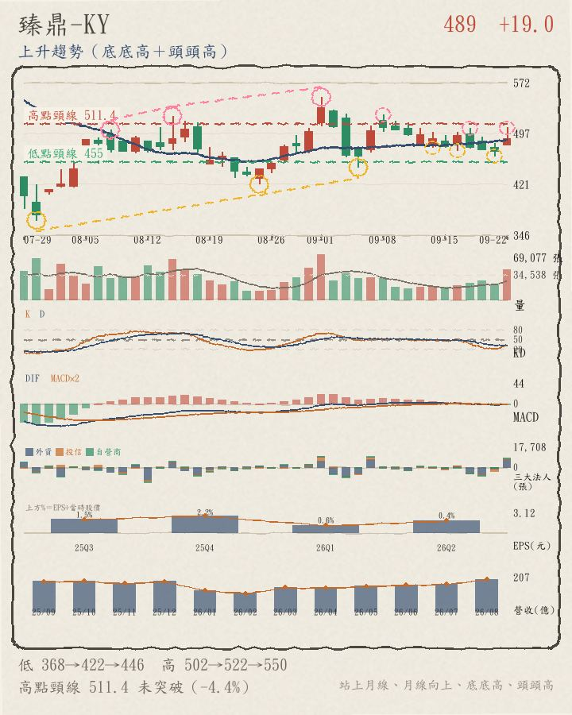
今天帶量收紅、站上月線 487.275，離高點頸線 511.4 還差 4.4%，轉折結構仍是底底高＋頭頭高。
- 月線位置：收盤 489 在月線 487.275 之上；5 日線 480.3 也在月線之下（短均在下）；月線向上、5 日線走平或向下
- 量能：成交量是 20 日均量的 1.61 倍，比 20 日均量大不少；收紅又量增，量價配合
- 關鍵價位：高點頸線 511.4 還沒突破，差 4.4%；最近轉折高點 550（低於 11.1%）；最近轉折低點 446.5（高於 9.5%）
- 轉折結構：低點 368、421.5、446.5 一路墊高 21.3%、高點 502、522、550 也一路墊高 9.6%，是底底高＋頭頭高；還沒確認的轉折低點 09-16 471、09-21 463.5；還沒確認的轉折高點 09-17 504、09-22 505（圖上虛線小圈）
剛突破前高 成交金額 197.58 億・全榜第 12 名（上市第 12 名）
好條件 6/8：站上月線、頭頭高、突破頸線、相對大盤強、外資買超、量價攻擊（收紅＋大量）
不好條件 1/8：月線下彎
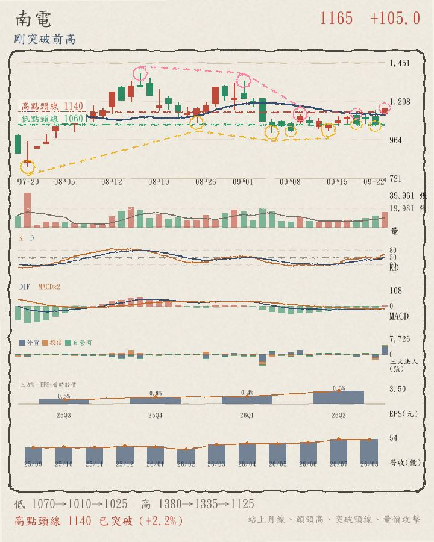
今天帶量收紅、站上月線 1123.75，已站上高點頸線 1140，高點還在墊高（但底部沒同步墊高）。
- 月線位置：收盤 1165 在月線 1123.75 之上；5 日線 1099 也在月線之下（短均在下）；月線走平或向下、5 日線向上
- 量能：成交量是 20 日均量的 1.55 倍，比 20 日均量大不少；收紅又量增，量價配合
- 關鍵價位：高點頸線 1140 已站上；最近轉折高點 1125（高於 3.6%）；最近轉折低點 1025（高於 13.7%）
- 轉折結構：高點 1380、1335、1125 墊高 3.6%（頭頭高），但低點 1070、1010、1025 沒有同步墊高；還沒確認的轉折低點 09-17 1060、09-21 1050；還沒確認的轉折高點 09-17 1130、09-22 1165（圖上虛線小圈）
底部墊高、突破前高 成交金額 174.81 億・全榜第 13 名（上市第 13 名）
好條件 8/8：站上月線、月線向上、底底高、頭頭高、突破頸線、相對大盤強、外資買超、量價攻擊（收紅＋大量）
不好條件 0/8：無
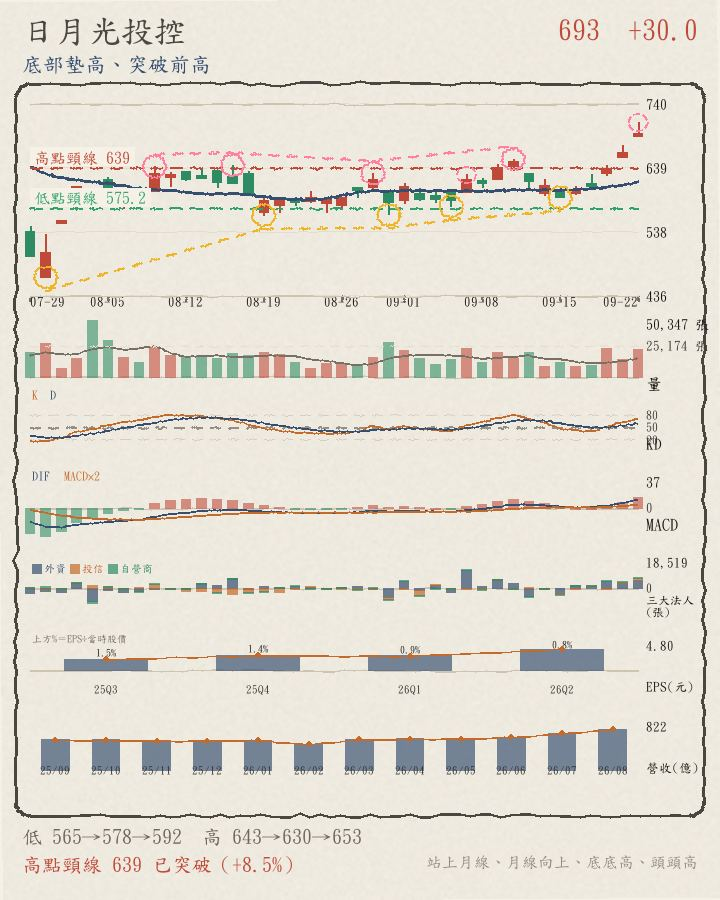
今天帶量收紅、站上月線 617.1，已站上高點頸線 639，轉折結構仍是底底高＋頭頭高。
- 月線位置：收盤 693 在月線 617.1 之上；5 日線 642.6 也在月線之上（短均在上）；月線向上、5 日線向上
- 量能：成交量是 20 日均量的 1.50 倍，比 20 日均量大不少；收紅又量增，量價配合
- 關鍵價位：高點頸線 639 已站上；最近轉折高點 653（高於 6.1%）；最近轉折低點 592（高於 17.1%）
- 轉折結構：低點 565、578、592 一路墊高 4.8%、高點 643、630、653 也一路墊高 8.9%，是底底高＋頭頭高；還沒確認的轉折高點 09-07 628、09-22 711（圖上虛線小圈）
區間或轉弱 成交金額 170.36 億・全榜第 15 名（上市第 14 名）
好條件 1/8：外資買超
不好條件 5/8：今日下跌、相對大盤弱、在月線之下、月線下彎、收盤跌破前一日低點
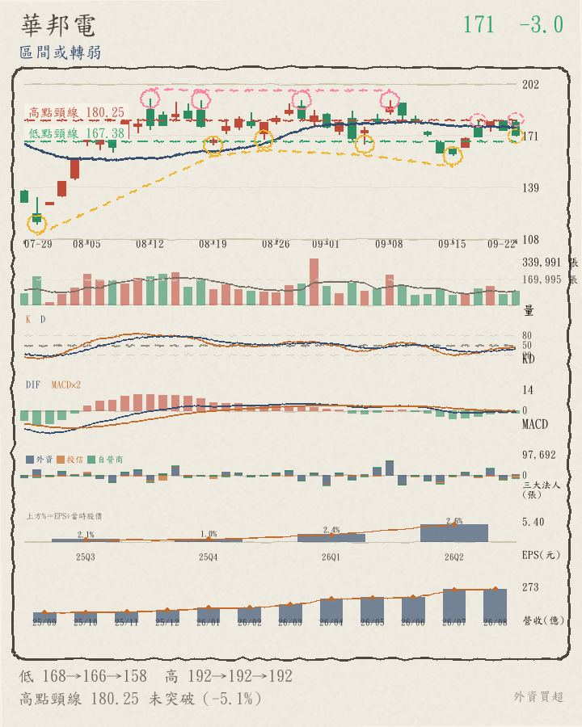
今天收黑、成交量也比平均少、跌破月線 175.725，離高點頸線 180.25 還差 5.1%，轉折還沒走出明顯方向。
- 月線位置：收盤 171 在月線 175.725 之下；5 日線 172.7 也在月線之下（短均在下）；月線走平或向下、5 日線向上
- 量能：成交量是 20 日均量的 0.78 倍，比 20 日均量少很多
- 關鍵價位：高點頸線 180.25 還沒突破，差 5.1%；最近轉折高點 192（低於 10.9%）；最近轉折低點 158.5（高於 7.9%）
- 轉折結構：低點 168.5、165.5、158.5 與高點 192、192、192 都沒有明顯遞增，屬於區間震盪或轉弱；還沒確認的轉折低點 09-22 170.5；還沒確認的轉折高點 09-17 180、09-22 180.5（圖上虛線小圈）
底部墊高、突破前高 成交金額 170.12 億・全榜第 16 名（上市第 15 名）
好條件 4/8：站上月線、月線向上、底底高、頭頭高
不好條件 4/8：今日下跌、相對大盤弱、外資賣超、收盤跌破前一日低點
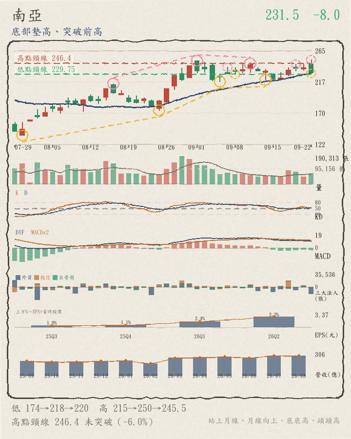
今天收黑、成交量也比平均少、站上月線 231.05，離高點頸線 246.4 還差 6.0%，轉折結構仍是底底高＋頭頭高。
- 月線位置：收盤 231.5 在月線 231.05 之上；5 日線 233.8 也在月線之上（短均在上）；月線向上、5 日線走平或向下
- 量能：成交量是 20 日均量的 0.80 倍，比 20 日均量少很多
- 關鍵價位：高點頸線 246.4 還沒突破，差 6.0%；最近轉折高點 245.5（低於 5.7%）；最近轉折低點 220.5（高於 5.0%）
- 轉折結構：低點 174、218、220.5 一路墊高 26.7%、高點 215、250、245.5 也一路墊高 2.4%，是底底高＋頭頭高；還沒確認的轉折低點 09-08 229、09-22 230.5；還沒確認的轉折高點 09-18 245、09-22 251.5（圖上虛線小圈）
高點墊高、底部不穩 成交金額 160.17 億・全榜第 19 名（上市第 16 名）
好條件 3/8：月線向上、頭頭高、量價攻擊（收紅＋大量）
不好條件 3/8：相對大盤弱、在月線之下、外資賣超
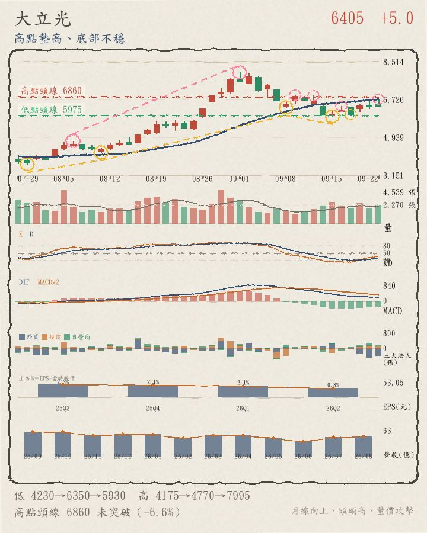
今天帶量收紅、跌破月線 6740，離高點頸線 6860 還差 6.6%，高點還在墊高（但底部沒同步墊高）。
- 月線位置：收盤 6405 在月線 6740 之下；5 日線 6296 也在月線之下（短均在下）；月線向上、5 日線走平或向下
- 量能：成交量是 20 日均量的 1.09 倍，比 20 日均量大一些；收紅又量增，量價配合
- 關鍵價位：高點頸線 6860 還沒突破，差 6.6%；最近轉折高點 7995（低於 19.9%）；最近轉折低點 5930（高於 8.0%）
- 轉折結構：高點 4175、4770、7995 墊高 91.5%（頭頭高），但低點 4230、6350、5930 沒有同步墊高；還沒確認的轉折低點 09-17 6020；還沒確認的轉折高點 09-16 6415、09-22 6750（圖上虛線小圈）
區間或轉弱 成交金額 137.37 億・全榜第 20 名（上市第 17 名）
好條件 1/8：站上月線
不好條件 5/8：今日下跌、相對大盤弱、量增下跌（出貨）、外資賣超、月線下彎
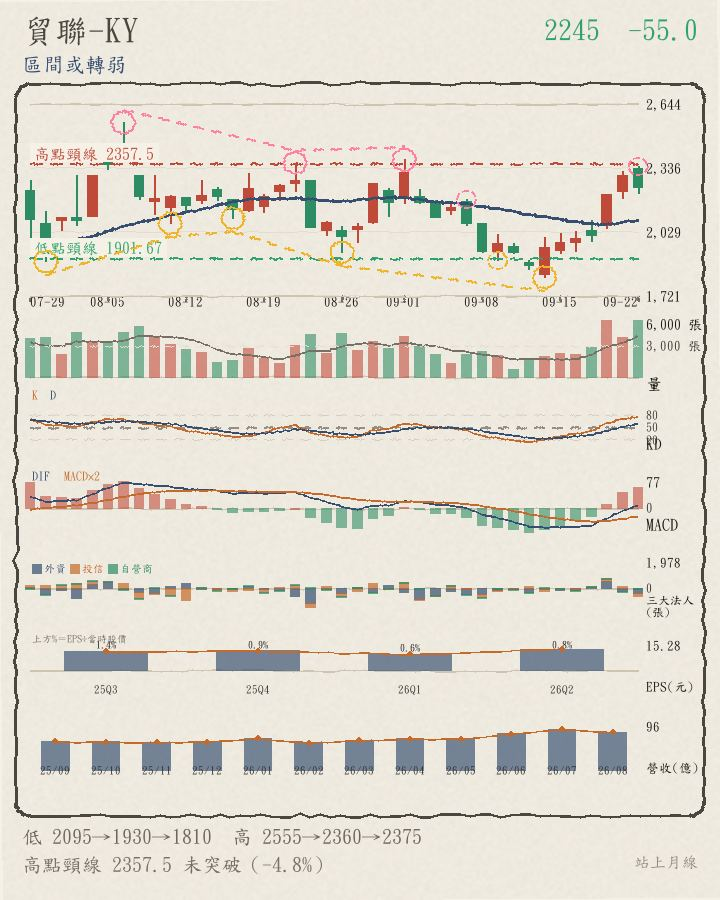
今天帶量收黑、站上月線 2085，離高點頸線 2357.5 還差 4.8%，轉折還沒走出明顯方向。
- 月線位置：收盤 2245 在月線 2085 之上；5 日線 2152 也在月線之上（短均在上）；月線走平或向下、5 日線向上
- 量能：成交量是 20 日均量的 2.07 倍，比 20 日均量大不少；收黑卻量增，量價背離
- 關鍵價位：高點頸線 2357.5 還沒突破，差 4.8%；最近轉折高點 2375（低於 5.5%）；最近轉折低點 1810（高於 24.0%）
- 轉折結構：低點 2095、1930、1810 與高點 2555、2360、2375 都沒有明顯遞增，屬於區間震盪或轉弱；還沒確認的轉折低點 09-09 1890；還沒確認的轉折高點 09-07 2185、09-22 2345（圖上虛線小圈）
區間或轉弱 成交金額 136.4 億・全榜第 21 名（上市第 18 名）
好條件 3/8：相對大盤強、外資買超、量價攻擊（收紅＋大量）
不好條件 2/8：在月線之下、月線下彎
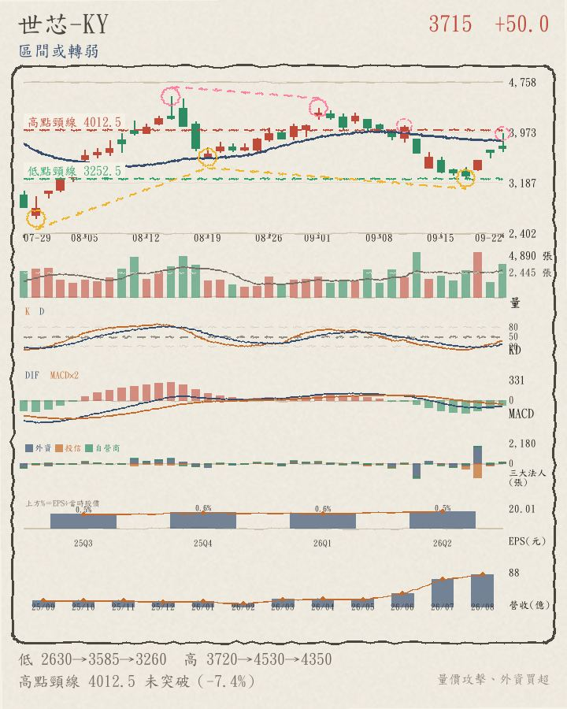
今天帶量收紅、跌破月線 3845，離高點頸線 4012.5 還差 7.4%，轉折還沒走出明顯方向。
- 月線位置：收盤 3715 在月線 3845 之下；5 日線 3512 也在月線之下（短均在下）；月線走平或向下、5 日線走平或向下
- 量能：成交量是 20 日均量的 1.58 倍，比 20 日均量大不少；收紅又量增，量價配合
- 關鍵價位：高點頸線 4012.5 還沒突破，差 7.4%；最近轉折高點 4350（低於 14.6%）；最近轉折低點 3260（高於 14.0%）
- 轉折結構：低點 2630、3585、3260 與高點 3720、4530、4350 都沒有明顯遞增，屬於區間震盪或轉弱；還沒確認的轉折高點 09-10 4075、09-22 3950（圖上虛線小圈）
剛突破前高 成交金額 136.12 億・全榜第 22 名（上市第 19 名）
好條件 7/8：站上月線、月線向上、頭頭高、突破頸線、相對大盤強、外資買超、量價攻擊（收紅＋大量）
不好條件 0/8：無
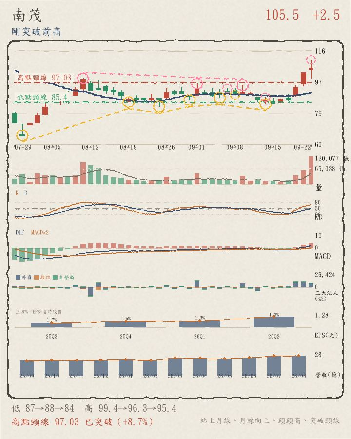
今天帶量收紅、站上月線 91.08，已站上高點頸線 97.03，高點還在墊高（但底部沒同步墊高）。
- 月線位置：收盤 105.5 在月線 91.08 之上；5 日線 95.26 也在月線之上（短均在上）；月線向上、5 日線向上
- 量能：成交量是 20 日均量的 5.60 倍，比 20 日均量大不少；收紅又量增，量價配合
- 關鍵價位：高點頸線 97.03 已站上；最近轉折高點 95.4（高於 10.6%）；最近轉折低點 84.3（高於 25.1%）
- 轉折結構：高點 99.4、96.3、95.4 墊高 15.8%（頭頭高），但低點 86.6、87.9、84.3 沒有同步墊高；還沒確認的轉折低點 09-08 89.7；還沒確認的轉折高點 09-14 88.2、09-22 110.5（圖上虛線小圈）
上升趨勢（底底高＋頭頭高） 成交金額 132.38 億・全榜第 23 名（上市第 20 名）
好條件 4/8：月線向上、底底高、頭頭高、外資買超
不好條件 4/8：今日下跌、相對大盤弱、在月線之下、量增下跌（出貨）
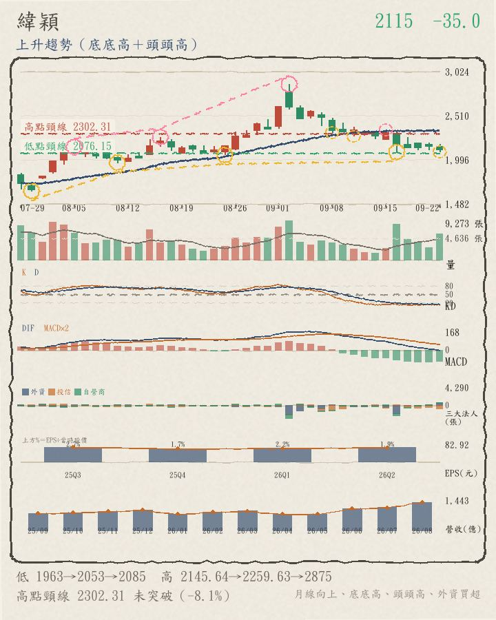
今天帶量收黑、跌破月線 2335.85，離高點頸線 2302.31 還差 8.1%，轉折結構仍是底底高＋頭頭高。
- 月線位置：收盤 2115 在月線 2335.85 之下；5 日線 2141 也在月線之下（短均在下）；月線向上、5 日線走平或向下
- 量能：成交量是 20 日均量的 1.38 倍，比 20 日均量大不少；收黑卻量增，量價背離
- 關鍵價位：高點頸線 2302.31 還沒突破，差 8.1%；最近轉折高點 2875（低於 26.4%）；最近轉折低點 2085（高於 1.4%）
- 轉折結構：低點 1962.92、2053.44、2085 一路墊高 6.2%、高點 2145.64、2259.63、2875 也一路墊高 34.0%，是底底高＋頭頭高；還沒確認的轉折低點 09-10 2270、09-22 2090；還沒確認的轉折高點 09-15 2345（圖上虛線小圈）
底部墊高、未過前高 成交金額 126.66 億・全榜第 24 名（上市第 21 名）
好條件 2/8：月線向上、底底高
不好條件 6/8：今日下跌、相對大盤弱、在月線之下、量增下跌（出貨）、外資賣超、收盤跌破前一日低點
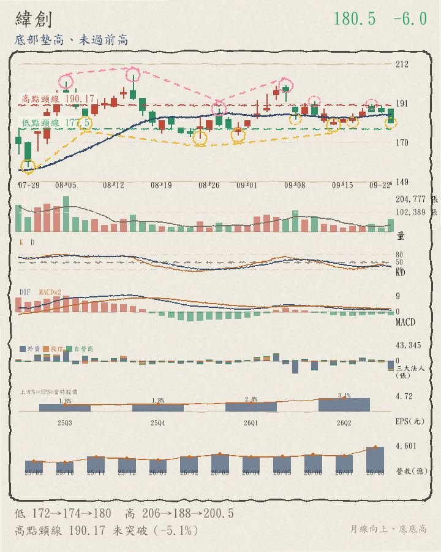
今天帶量收黑、跌破月線 185.05，離高點頸線 190.17 還差 5.1%，底部還在墊高（但高點沒同步創高）。
- 月線位置：收盤 180.5 在月線 185.05 之下；5 日線 184.6 也在月線之下（短均在下）；月線向上、5 日線走平或向下
- 量能：成交量是 20 日均量的 1.33 倍，比 20 日均量大不少；收黑卻量增，量價背離
- 關鍵價位：高點頸線 190.17 還沒突破，差 5.1%；最近轉折高點 200.5（低於 10.0%）；最近轉折低點 179.5（高於 0.6%）
- 轉折結構：低點 172.5、174、179.5 墊高 4.1%（底底高），但高點 206、188、200.5 沒有同步創高；還沒確認的轉折低點 09-16 181、09-22 180.5；還沒確認的轉折高點 09-10 192、09-18 190.5（圖上虛線小圈）
剛突破前高 成交金額 121.23 億・全榜第 26 名（上市第 22 名）
好條件 5/8：站上月線、頭頭高、突破頸線、相對大盤強、外資買超
不好條件 1/8：月線下彎
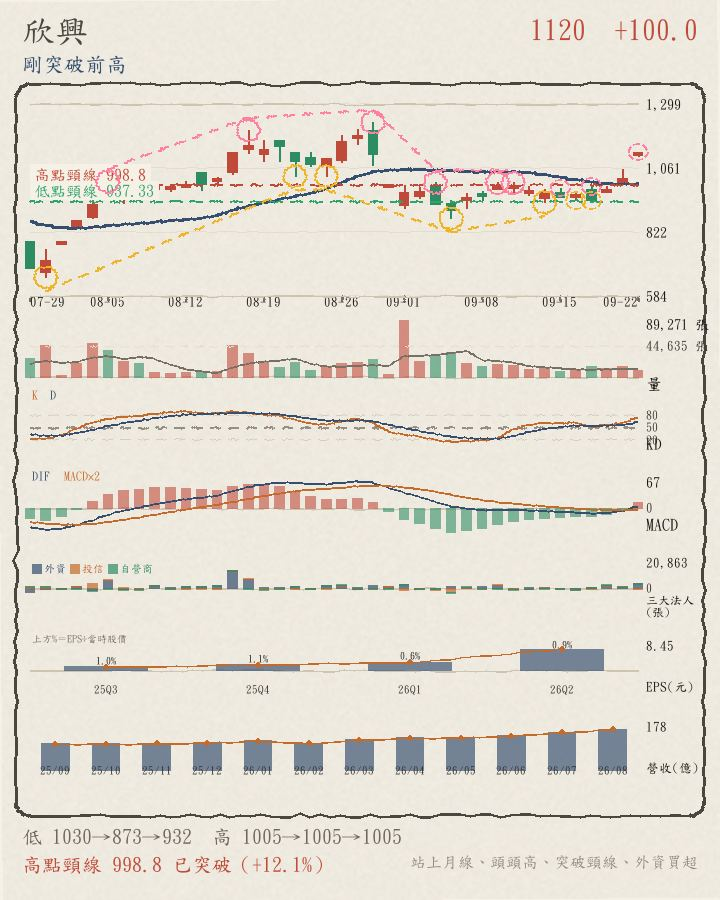
今天收紅、但成交量比平均少、站上月線 1001.4，已站上高點頸線 998.8，高點還在墊高（但底部沒同步墊高）。
- 月線位置：收盤 1120 在月線 1001.4 之上；5 日線 1004.4 也在月線之上（短均在上）；月線走平或向下、5 日線向上
- 量能：成交量是 20 日均量的 0.49 倍，比 20 日均量少很多；收紅但量縮，量價背離
- 關鍵價位：高點頸線 998.8 已站上；最近轉折高點 1005（高於 11.4%）；最近轉折低點 932（高於 20.2%）
- 轉折結構：高點 1005、1005、1005 墊高 11.4%（頭頭高），但低點 1030、873、932 沒有同步墊高；還沒確認的轉折低點 09-16 940、09-17 940；還沒確認的轉折高點 09-17 993、09-22 1120（圖上虛線小圈）
剛突破前高 成交金額 118.79 億・全榜第 28 名（上市第 23 名）
好條件 6/8：站上月線、月線向上、頭頭高、相對大盤強、外資買超、量價攻擊（收紅＋大量）
不好條件 0/8：無
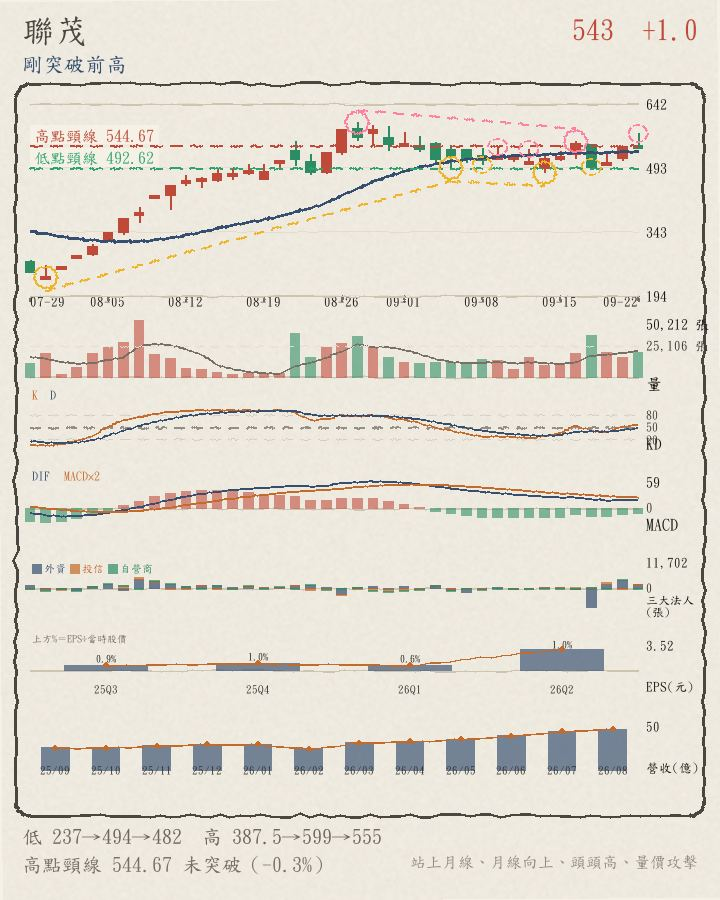
今天帶量收紅、站上月線 531.7，離高點頸線 544.67 還差 0.3%，高點還在墊高（但底部沒同步墊高）。
- 月線位置：收盤 543 在月線 531.7 之上；5 日線 527 也在月線之下（短均在下）；月線向上、5 日線向上
- 量能：成交量是 20 日均量的 1.16 倍，比 20 日均量大不少；收紅又量增，量價配合
- 關鍵價位：高點頸線 544.67 還沒突破，差 0.3%；最近轉折高點 555（低於 2.2%）；最近轉折低點 482（高於 12.7%）
- 轉折結構：高點 387.5、599、555 墊高 3.4%（頭頭高），但低點 237、493.5、482 沒有同步墊高；還沒確認的轉折低點 09-08 500、09-17 495；還沒確認的轉折高點 09-11 537、09-22 574（圖上虛線小圈）
區間或轉弱 成交金額 103.63 億・全榜第 31 名（上市第 24 名）
好條件 1/8：外資買超
不好條件 5/8：今日下跌、相對大盤弱、在月線之下、量增下跌（出貨）、月線下彎
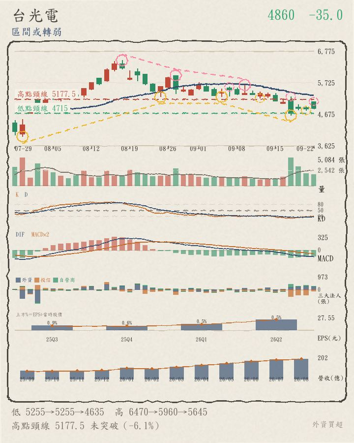
今天收黑、跌破月線 5299.75，離高點頸線 5177.5 還差 6.1%，轉折還沒走出明顯方向。
- 月線位置：收盤 4860 在月線 5299.75 之下；5 日線 4885 也在月線之下（短均在下）；月線走平或向下、5 日線走平或向下
- 量能：成交量是 20 日均量的 1.04 倍，跟 20 日均量差不多
- 關鍵價位：高點頸線 5177.5 還沒突破，差 6.1%；最近轉折高點 5645（低於 13.9%）；最近轉折低點 4635（高於 4.9%）
- 轉折結構：低點 5255、5255、4635 與高點 6470、5960、5645 都沒有明顯遞增，屬於區間震盪或轉弱；還沒確認的轉折低點 09-11 5210、09-21 4795；還沒確認的轉折高點 09-17 5255、09-22 5100（圖上虛線小圈）
剛突破前高 成交金額 103.48 億・全榜第 32 名（上市第 25 名）
好條件 3/8：站上月線、月線向上、頭頭高
不好條件 4/8：今日下跌、相對大盤弱、量增下跌（出貨）、外資賣超
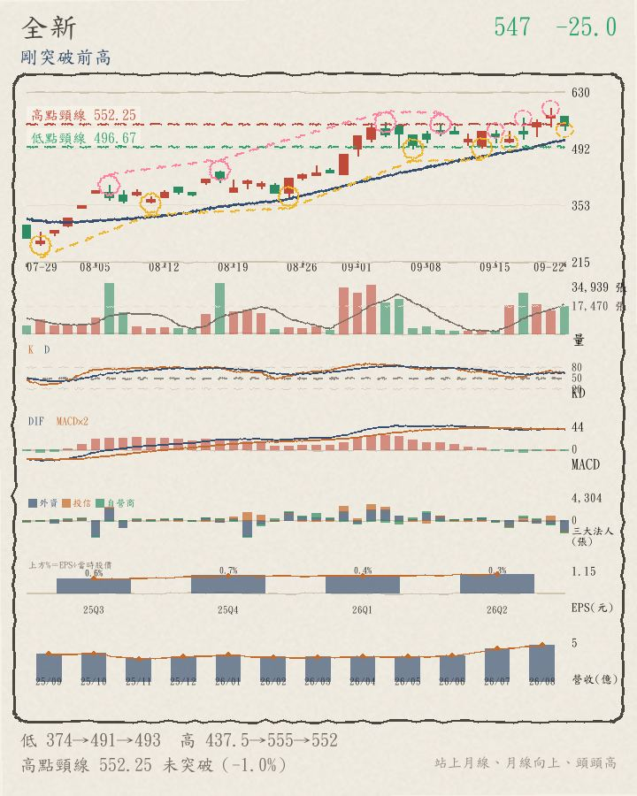
今天帶量收黑、站上月線 513.25，離高點頸線 552.25 還差 1.0%，高點還在墊高（但底部沒同步墊高）。
- 月線位置：收盤 547 在月線 513.25 之上；5 日線 544.8 也在月線之上（短均在上）；月線向上、5 日線向上
- 量能：成交量是 20 日均量的 1.49 倍，比 20 日均量大不少；收黑卻量增，量價背離
- 關鍵價位：高點頸線 552.25 還沒突破，差 1.0%；最近轉折高點 552（低於 0.9%）；最近轉折低點 493（高於 11.0%）
- 轉折結構：高點 437.5、555、552 墊高 6.9%（頭頭高），但低點 374.5、491、493 沒有同步墊高；還沒確認的轉折低點 09-16 506、09-22 537；還沒確認的轉折高點 09-17 566、09-21 590（圖上虛線小圈）
上升趨勢（底底高＋頭頭高） 成交金額 100.38 億・全榜第 33 名（上市第 26 名）
好條件 4/8：站上月線、月線向上、底底高、頭頭高
不好條件 4/8：今日下跌、相對大盤弱、量增下跌（出貨）、外資賣超
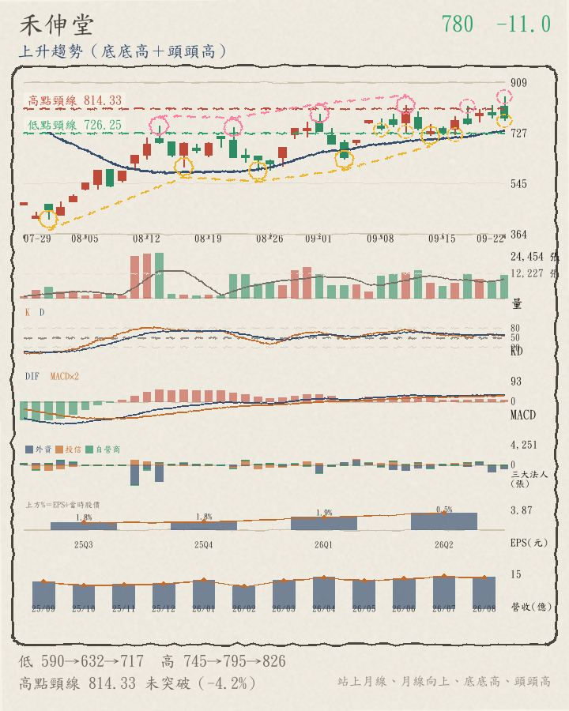
今天帶量收黑、站上月線 735.45，離高點頸線 814.33 還差 4.2%，轉折結構仍是底底高＋頭頭高。
- 月線位置：收盤 780 在月線 735.45 之上；5 日線 780 也在月線之上（短均在上）；月線向上、5 日線向上
- 量能：成交量是 20 日均量的 1.27 倍，比 20 日均量大不少；收黑卻量增，量價背離
- 關鍵價位：高點頸線 814.33 還沒突破，差 4.2%；最近轉折高點 826（低於 5.6%）；最近轉折低點 717（高於 8.8%）
- 轉折結構：低點 590、632、717 一路墊高 21.5%、高點 745、795、826 也一路墊高 10.9%，是底底高＋頭頭高；還沒確認的轉折低點 09-16 720、09-22 770；還沒確認的轉折高點 09-17 822、09-22 856（圖上虛線小圈）
區間或轉弱 成交金額 97.53 億・全榜第 34 名（上市第 27 名）
好條件 5/8：站上月線、月線向上、相對大盤強、外資買超、量價攻擊（收紅＋大量）
不好條件 0/8：無
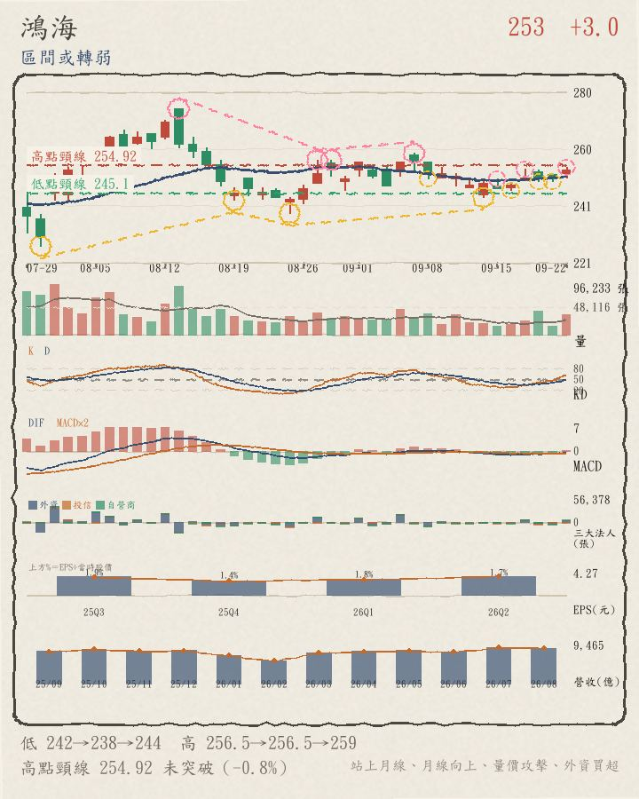
今天帶量收紅、站上月線 250.875，離高點頸線 254.92 還差 0.8%，轉折還沒走出明顯方向。
- 月線位置：收盤 253 在月線 250.875 之上；5 日線 250.4 也在月線之下（短均在下）；月線向上、5 日線向上
- 量能：成交量是 20 日均量的 1.30 倍，比 20 日均量大不少；收紅又量增，量價配合
- 關鍵價位：高點頸線 254.92 還沒突破，差 0.8%；最近轉折高點 259（低於 2.3%）；最近轉折低點 243.5（高於 3.9%）
- 轉折結構：低點 242.5、238、243.5 與高點 256.5、256.5、259 都沒有明顯遞增，屬於區間震盪或轉弱；還沒確認的轉折低點 09-18 249、09-21 249；還沒確認的轉折高點 09-17 253.5、09-22 254（圖上虛線小圈）
底部墊高、突破前高 成交金額 91.76 億・全榜第 35 名（上市第 28 名）
好條件 7/8：站上月線、月線向上、底底高、頭頭高、突破頸線、相對大盤強、量價攻擊（收紅＋大量）
不好條件 1/8：外資賣超
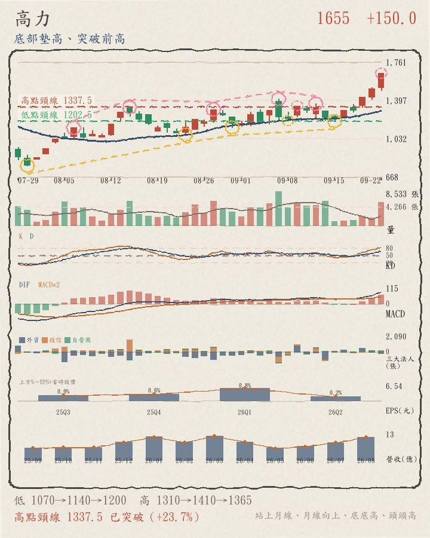
今天帶量收紅、站上月線 1297.75，已站上高點頸線 1337.5，轉折結構仍是底底高＋頭頭高。
- 月線位置：收盤 1655 在月線 1297.75 之上；5 日線 1438 也在月線之上（短均在上）；月線向上、5 日線向上
- 量能：成交量是 20 日均量的 1.44 倍，比 20 日均量大不少；收紅又量增，量價配合
- 關鍵價位：高點頸線 1337.5 已站上；最近轉折高點 1365（高於 21.2%）；最近轉折低點 1200（高於 37.9%）
- 轉折結構：低點 1070、1140、1200 一路墊高 12.1%、高點 1310、1410、1365 也一路墊高 21.2%，是底底高＋頭頭高；還沒確認的轉折低點 09-08 1205；還沒確認的轉折高點 09-09 1345、09-22 1655（圖上虛線小圈）
區間或轉弱 成交金額 87.15 億・全榜第 36 名（上市第 29 名）
好條件 1/8：月線向上
不好條件 5/8：今日下跌、相對大盤弱、在月線之下、量增下跌（出貨）、外資賣超
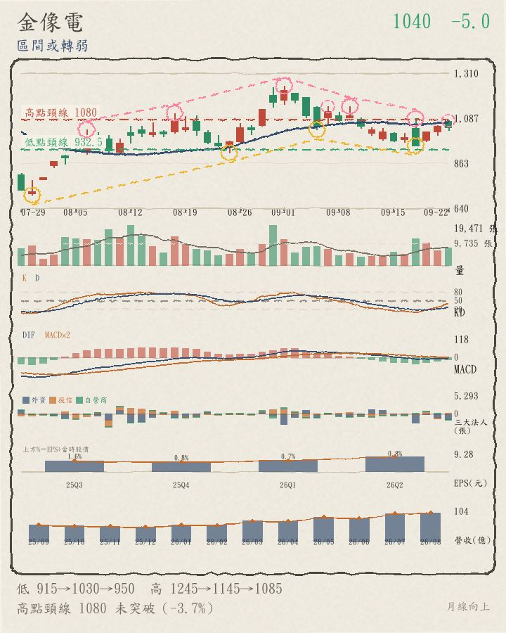
今天帶量收黑、跌破月線 1065.95，離高點頸線 1080 還差 3.7%，轉折還沒走出明顯方向。
- 月線位置：收盤 1040 在月線 1065.95 之下；5 日線 1009.4 也在月線之下（短均在下）；月線向上、5 日線走平或向下
- 量能：成交量是 20 日均量的 1.05 倍，比 20 日均量大一些；收黑卻量增，量價背離
- 關鍵價位：高點頸線 1080 還沒突破，差 3.7%；最近轉折高點 1085（低於 4.1%）；最近轉折低點 950（高於 9.5%）
- 轉折結構：低點 915、1030、950 與高點 1245、1145、1085 都沒有明顯遞增，屬於區間震盪或轉弱；還沒確認的轉折高點 09-07 1145、09-22 1075（圖上虛線小圈）
高點墊高、底部不穩 成交金額 80.6 億・全榜第 39 名（上市第 30 名）
好條件 2/8：頭頭高、外資買超
不好條件 7/8：跌破前低、今日下跌、相對大盤弱、在月線之下、量增下跌（出貨）、月線下彎、收盤跌破前一日低點
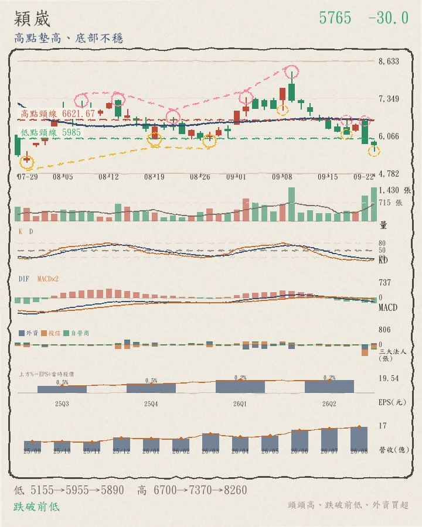
今天帶量收黑、跌破月線 6600，跌破前一個轉折低點（高點頸線 6621.67 還在收盤上方），高點還在墊高（但底部沒同步墊高）。
- 月線位置：收盤 5765 在月線 6600 之下；5 日線 6065 也在月線之下（短均在下）；月線走平或向下、5 日線走平或向下
- 量能：成交量是 20 日均量的 2.65 倍，比 20 日均量大不少；收黑卻量增，量價背離
- 關鍵價位：高點頸線 6621.67 還沒突破、還在收盤上方 12.9%；最近轉折高點 8260（低於 30.2%）；最近轉折低點 5890（低於 2.1%）
- 轉折結構：高點 6700、7370、8260 墊高 23.3%（頭頭高），但低點 5155、5955、5890 沒有同步墊高；還沒確認的轉折低點 09-17 6110、09-22 5530；還沒確認的轉折高點 09-17 6595、09-21 6570（圖上虛線小圈）
高點墊高、底部不穩 成交金額 78.78 億・全榜第 41 名（上市第 31 名）
好條件 3/8：站上月線、月線向上、頭頭高
不好條件 3/8：今日下跌、相對大盤弱、外資賣超
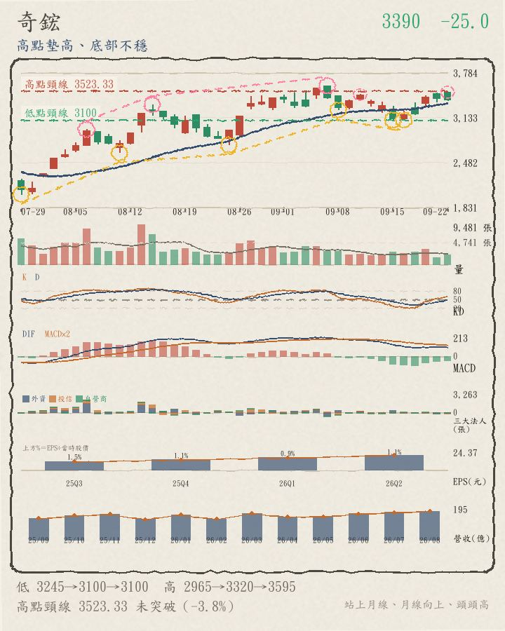
今天收黑、成交量也比平均少、站上月線 3340.25，離高點頸線 3523.33 還差 3.8%，高點還在墊高（但底部沒同步墊高）。
- 月線位置：收盤 3390 在月線 3340.25 之上；5 日線 3319 也在月線之下（短均在下）；月線向上、5 日線走平或向下
- 量能：成交量是 20 日均量的 0.71 倍，比 20 日均量少很多
- 關鍵價位：高點頸線 3523.33 還沒突破，差 3.8%；最近轉折高點 3595（低於 5.7%）；最近轉折低點 3100（高於 9.4%）
- 轉折結構：高點 2965、3320、3595 墊高 21.2%（頭頭高），但低點 3245、3100、3100 沒有同步墊高；還沒確認的轉折高點 09-10 3470、09-22 3505（圖上虛線小圈）
區間或轉弱 成交金額 75.69 億・全榜第 42 名（上市第 32 名）
好條件 3/8：突破頸線、相對大盤強、量價攻擊（收紅＋大量）
不好條件 3/8：在月線之下、外資賣超、月線下彎
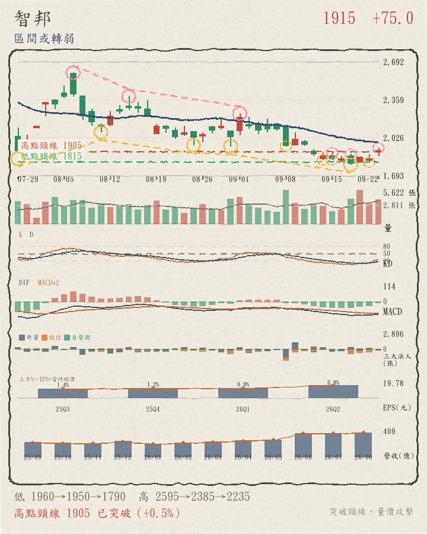
今天帶量收紅、跌破月線 1986.25，已站上高點頸線 1905，轉折還沒走出明顯方向。
- 月線位置：收盤 1915 在月線 1986.25 之下；5 日線 1850 也在月線之下（短均在下）；月線走平或向下、5 日線走平或向下
- 量能：成交量是 20 日均量的 1.24 倍，比 20 日均量大不少；收紅又量增，量價配合
- 關鍵價位：高點頸線 1905 已站上；最近轉折高點 2235（低於 14.3%）；最近轉折低點 1790（高於 7.0%）
- 轉折結構：低點 1960、1950、1790 與高點 2595、2385、2235 都沒有明顯遞增，屬於區間震盪或轉弱；還沒確認的轉折低點 09-15 1830、09-21 1810；還沒確認的轉折高點 09-17 1885、09-22 1935（圖上虛線小圈）
區間或轉弱 成交金額 73.99 億・全榜第 43 名（上市第 33 名）
好條件 3/8：相對大盤強、外資買超、量價攻擊（收紅＋大量）
不好條件 2/8：在月線之下、月線下彎
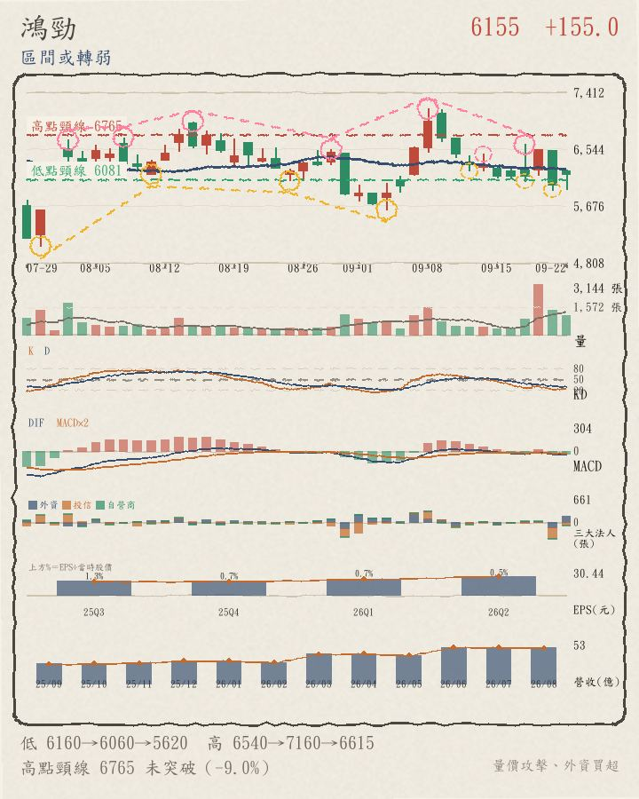
今天帶量收紅、跌破月線 6244.75，離高點頸線 6765 還差 9.0%，轉折還沒走出明顯方向。
- 月線位置：收盤 6155 在月線 6244.75 之下；5 日線 6191 也在月線之下（短均在下）；月線走平或向下、5 日線走平或向下
- 量能：成交量是 20 日均量的 1.39 倍，比 20 日均量大不少；收紅又量增，量價配合
- 關鍵價位：高點頸線 6765 還沒突破，差 9.0%；最近轉折高點 6615（低於 7.0%）；最近轉折低點 5620（高於 9.5%）
- 轉折結構：低點 6160、6060、5620 與高點 6540、7160、6615 都沒有明顯遞增，屬於區間震盪或轉弱；還沒確認的轉折低點 09-17 6055、09-21 5920；還沒確認的轉折高點 09-14 6470（圖上虛線小圈）
上升趨勢（底底高＋頭頭高） 成交金額 72.15 億・全榜第 44 名（上市第 34 名）
好條件 6/8：站上月線、月線向上、底底高、頭頭高、相對大盤強、量價攻擊（收紅＋大量）
不好條件 1/8：外資賣超
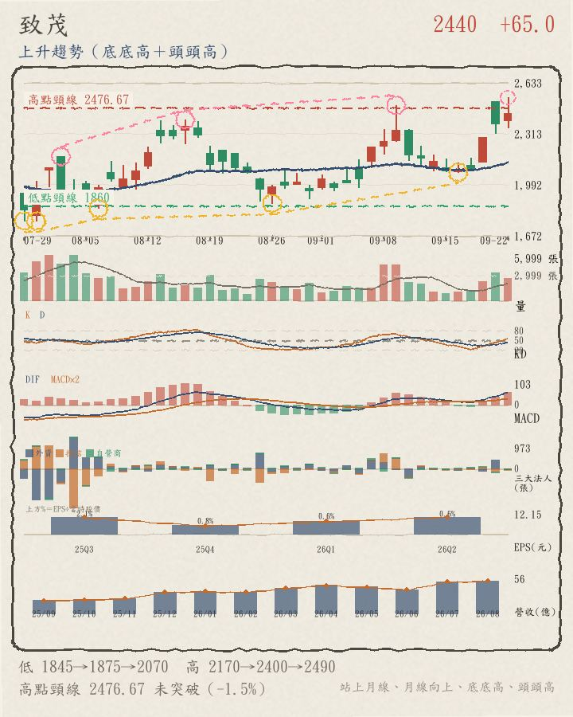
今天帶量收紅、站上月線 2133，離高點頸線 2476.67 還差 1.5%，轉折結構仍是底底高＋頭頭高。
- 月線位置：收盤 2440 在月線 2133 之上；5 日線 2256 也在月線之上（短均在上）；月線向上、5 日線向上
- 量能：成交量是 20 日均量的 1.39 倍，比 20 日均量大不少；收紅又量增，量價配合
- 關鍵價位：高點頸線 2476.67 還沒突破，差 1.5%；最近轉折高點 2490（低於 2.0%）；最近轉折低點 2070（高於 17.9%）
- 轉折結構：低點 1845、1875、2070 一路墊高 12.2%、高點 2170、2400、2490 也一路墊高 14.7%，是底底高＋頭頭高；還沒確認的轉折高點 09-22 2540（圖上虛線小圈）
高點墊高、底部不穩 成交金額 70.28 億・全榜第 47 名（上市第 35 名）
好條件 4/8：站上月線、月線向上、頭頭高、外資買超
不好條件 3/8：今日下跌、相對大盤弱、收盤跌破前一日低點
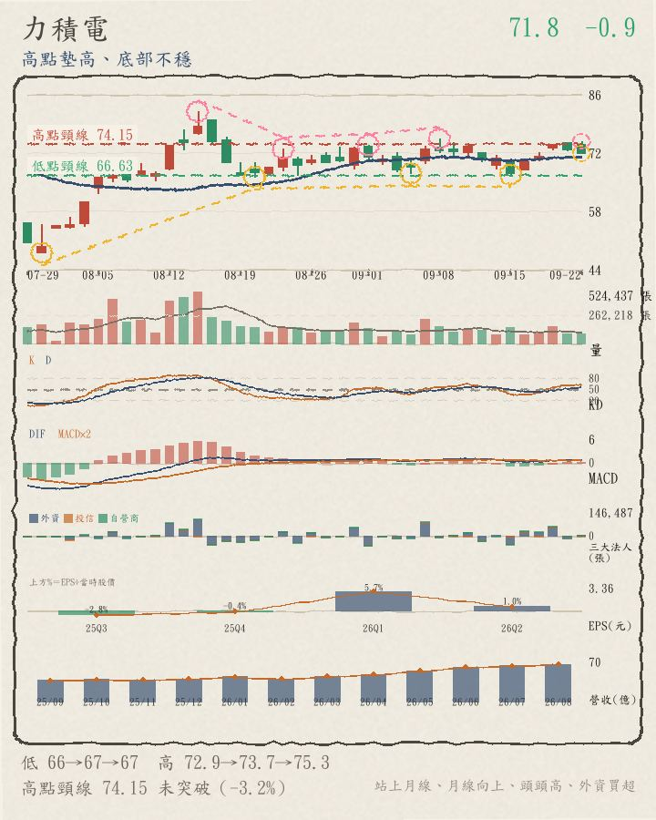
今天收黑、成交量也比平均少、站上月線 70.97，離高點頸線 74.15 還差 3.2%，高點還在墊高（但底部沒同步墊高）。
- 月線位置：收盤 71.8 在月線 70.97 之上；5 日線 71.92 也在月線之上（短均在上）；月線向上、5 日線向上
- 量能：成交量是 20 日均量的 0.72 倍，比 20 日均量少很多
- 關鍵價位：高點頸線 74.15 還沒突破，差 3.2%；最近轉折高點 75.3（低於 4.6%）；最近轉折低點 66.7（高於 7.6%）
- 轉折結構：高點 72.9、73.7、75.3 墊高 3.3%（頭頭高），但低點 66.2、67、66.7 沒有同步墊高；還沒確認的轉折低點 09-22 71.8；還沒確認的轉折高點 09-22 74.7（圖上虛線小圈）
底部墊高、未過前高 成交金額 69.36 億・全榜第 48 名（上市第 36 名）
好條件 5/8：站上月線、月線向上、底底高、相對大盤強、外資買超
不好條件 0/8：無
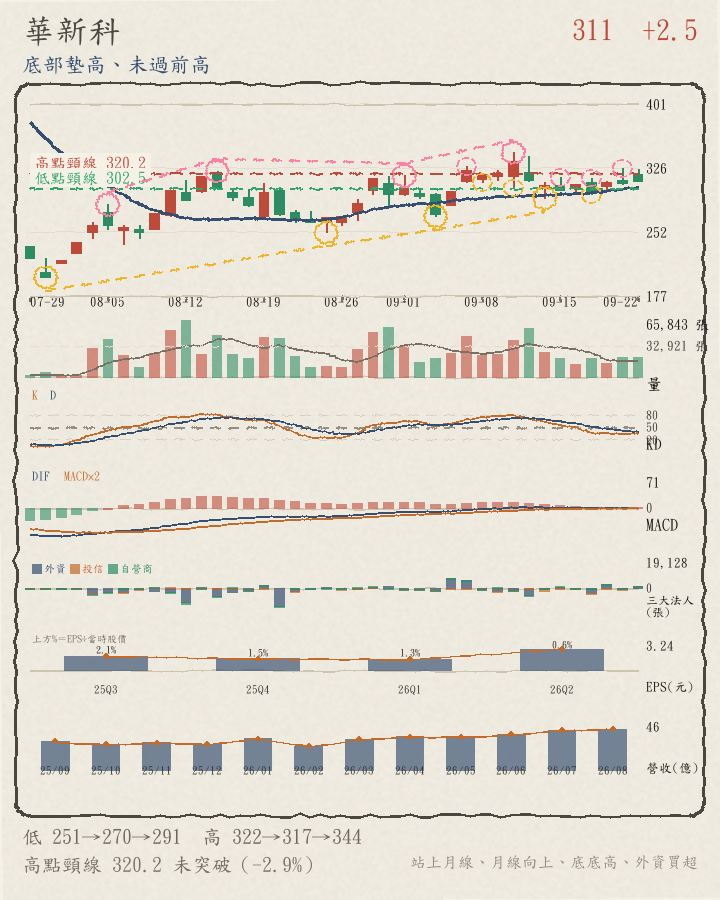
今天收紅、但成交量比平均少、站上月線 303.7，離高點頸線 320.2 還差 2.9%，底部還在墊高（但高點沒同步創高）。
- 月線位置：收盤 311 在月線 303.7 之上；5 日線 306.7 也在月線之上（短均在上）；月線向上、5 日線走平或向下
- 量能：成交量是 20 日均量的 0.75 倍，比 20 日均量少很多；收紅但量縮，量價背離
- 關鍵價位：高點頸線 320.2 還沒突破，差 2.9%；最近轉折高點 344（低於 9.6%）；最近轉折低點 291（高於 6.9%）
- 轉折結構：低點 251、270、291 墊高 15.9%（底底高），但高點 322、317、344 沒有同步創高；還沒確認的轉折低點 09-10 303、09-17 295；還沒確認的轉折高點 09-17 314.5、09-21 326（圖上虛線小圈）
底部墊高、突破前高 成交金額 65.63 億・全榜第 49 名（上市第 37 名）
好條件 7/8：站上月線、月線向上、底底高、頭頭高、突破頸線、相對大盤強、量價攻擊（收紅＋大量）
不好條件 1/8：外資賣超
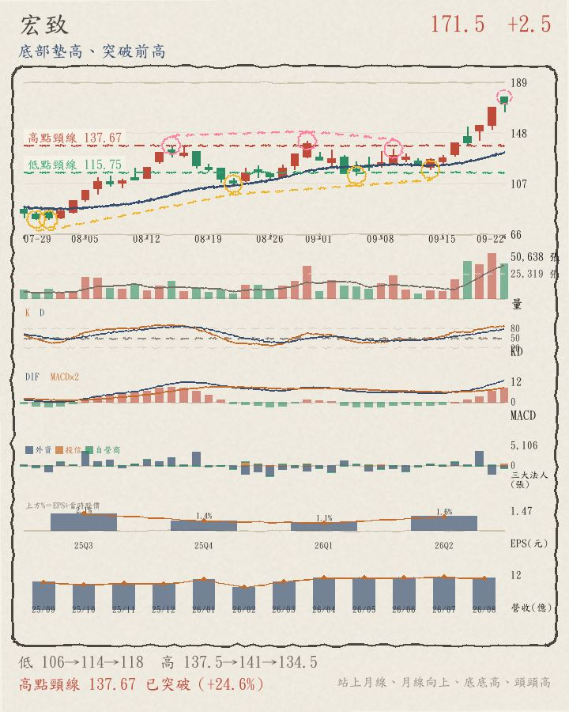
今天帶量收紅、站上月線 131.975，已站上高點頸線 137.67，轉折結構仍是底底高＋頭頭高。
- 月線位置：收盤 171.5 在月線 131.975 之上；5 日線 154.9 也在月線之上（短均在上）；月線向上、5 日線向上
- 量能：成交量是 20 日均量的 2.04 倍，比 20 日均量大不少；收紅又量增，量價配合
- 關鍵價位：高點頸線 137.67 已站上；最近轉折高點 134.5（高於 27.5%）；最近轉折低點 118（高於 45.3%）
- 轉折結構：低點 106.5、113.5、118 一路墊高 10.8%、高點 137.5、141、134.5 也一路墊高 31.6%，是底底高＋頭頭高；還沒確認的轉折高點 09-22 177（圖上虛線小圈）
區間或轉弱 成交金額 62.5 億・全榜第 52 名（上市第 38 名）
好條件 4/8：站上月線、月線向上、相對大盤強、量價攻擊（收紅＋大量）
不好條件 1/8：外資賣超
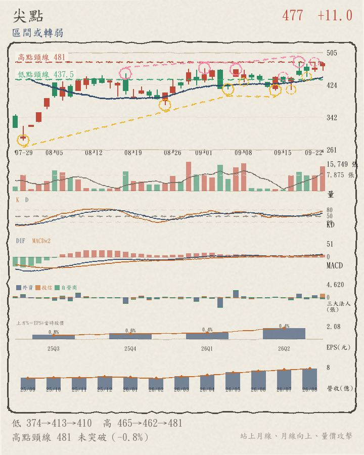
今天帶量收紅、站上月線 442.525，離高點頸線 481 還差 0.8%，轉折還沒走出明顯方向。
- 月線位置：收盤 477 在月線 442.525 之上；5 日線 458.6 也在月線之上（短均在上）；月線向上、5 日線向上
- 量能：成交量是 20 日均量的 1.84 倍，比 20 日均量大不少；收紅又量增，量價配合
- 關鍵價位：高點頸線 481 還沒突破，差 0.8%；最近轉折高點 481（低於 0.8%）；最近轉折低點 410.5（高於 16.2%）
- 轉折結構：低點 373.5、413、410.5 與高點 465、462、481 都沒有明顯遞增，屬於區間震盪或轉弱；還沒確認的轉折低點 09-16 411.5、09-18 444；還沒確認的轉折高點 09-15 445、09-21 481（圖上虛線小圈）
上升趨勢（底底高＋頭頭高） 成交金額 59.58 億・全榜第 54 名（上市第 39 名）
好條件 7/8：站上月線、月線向上、底底高、頭頭高、突破頸線、相對大盤強、外資買超
不好條件 0/8：無
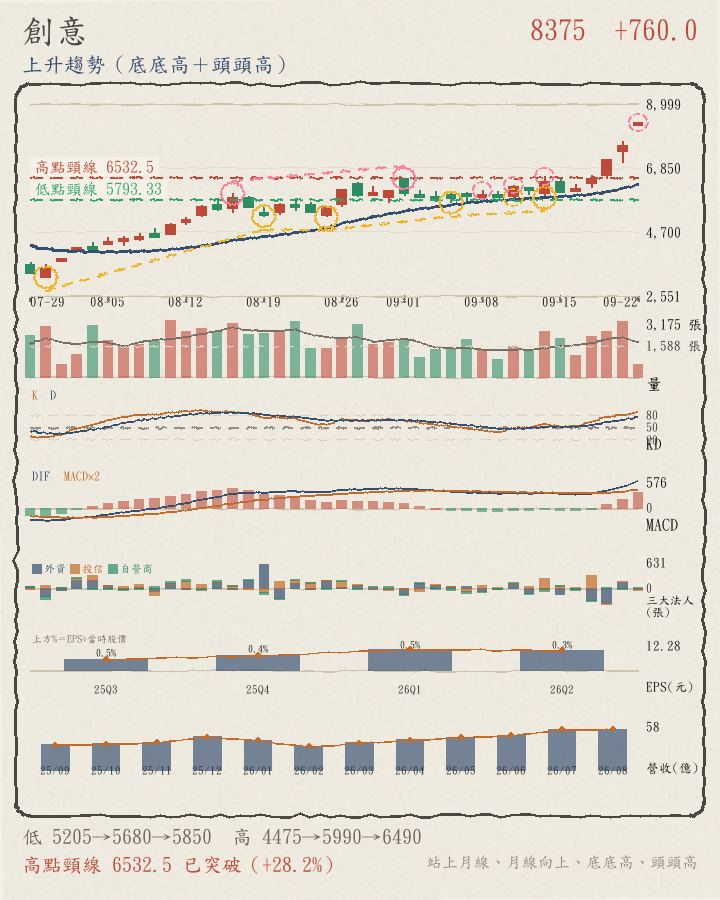
今天收紅、但成交量比平均少、站上月線 6303.5，已站上高點頸線 6532.5，轉折結構仍是底底高＋頭頭高。
- 月線位置：收盤 8375 在月線 6303.5 之上；5 日線 7162 也在月線之上（短均在上）；月線向上、5 日線向上
- 量能：成交量是 20 日均量的 0.37 倍，比 20 日均量少很多；收紅但量縮，量價背離
- 關鍵價位：高點頸線 6532.5 已站上；最近轉折高點 6490（高於 29.0%）；最近轉折低點 5850（高於 43.2%）
- 轉折結構：低點 5205、5680、5850 一路墊高 12.4%、高點 4475、5990、6490 也一路墊高 45.0%，是底底高＋頭頭高；還沒確認的轉折低點 09-10 5850；還沒確認的轉折高點 09-14 6575、09-22 8375（圖上虛線小圈）
高點墊高、底部不穩 成交金額 58.56 億・全榜第 55 名（上市第 40 名）
好條件 3/8：月線向上、頭頭高、外資買超
不好條件 3/8：今日下跌、相對大盤弱、在月線之下
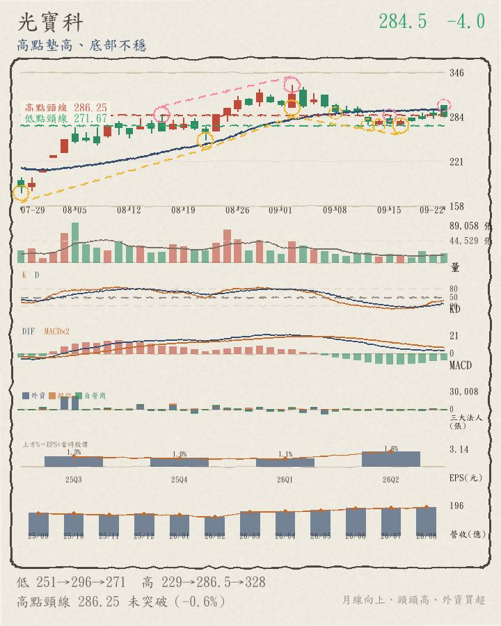
今天收黑、成交量也比平均少、跌破月線 293.25，離高點頸線 286.25 還差 0.6%，高點還在墊高（但底部沒同步墊高）。
- 月線位置：收盤 284.5 在月線 293.25 之下；5 日線 282 也在月線之下（短均在下）；月線向上、5 日線走平或向下
- 量能：成交量是 20 日均量的 0.75 倍，比 20 日均量少很多
- 關鍵價位：高點頸線 286.25 還沒突破，差 0.6%；最近轉折高點 328（低於 13.3%）；最近轉折低點 271（高於 5.0%）
- 轉折結構：高點 229、286.5、328 墊高 43.2%（頭頭高），但低點 251、296.5、271 沒有同步墊高；還沒確認的轉折低點 09-11 272、09-14 272；還沒確認的轉折高點 09-15 286、09-22 299.5（圖上虛線小圈）
剛突破前高 成交金額 57.91 億・全榜第 56 名（上市第 41 名）
好條件 4/8：站上月線、月線向上、頭頭高、外資買超
不好條件 3/8：今日下跌、相對大盤弱、量增下跌（出貨）
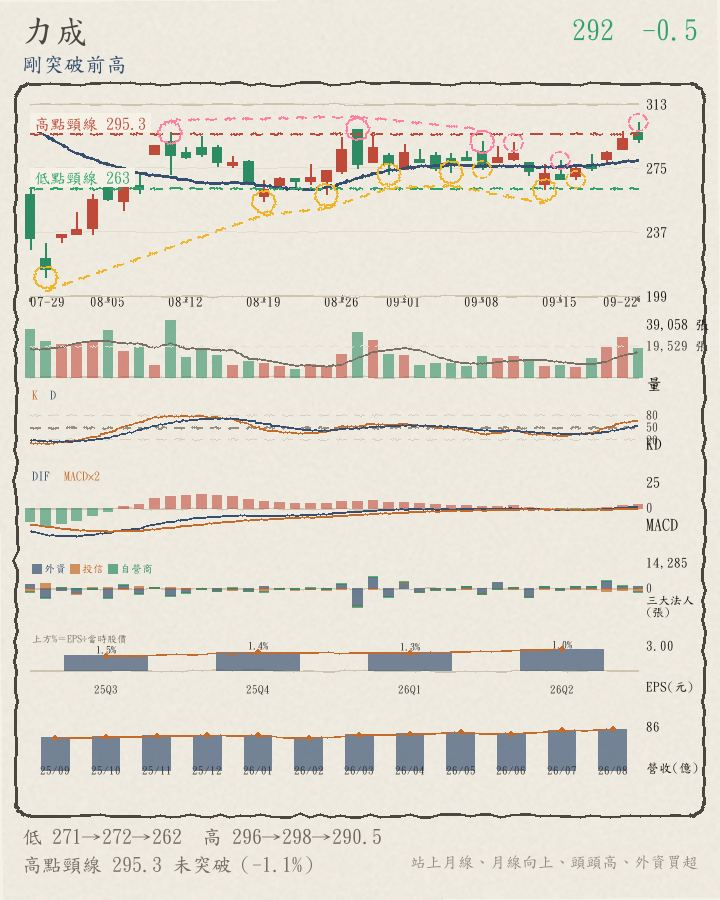
今天帶量收黑、站上月線 279.525，離高點頸線 295.3 還差 1.1%，高點還在墊高（但底部沒同步墊高）。
- 月線位置：收盤 292 在月線 279.525 之上；5 日線 283.5 也在月線之上（短均在上）；月線向上、5 日線向上
- 量能：成交量是 20 日均量的 1.41 倍，比 20 日均量大不少；收黑卻量增，量價背離
- 關鍵價位：高點頸線 295.3 還沒突破，差 1.1%；最近轉折高點 290.5（高於 0.5%）；最近轉折低點 262（高於 11.5%）
- 轉折結構：高點 296、298、290.5 墊高 4.0%（頭頭高），但低點 271、272.5、262 沒有同步墊高；還沒確認的轉折低點 09-08 274、09-16 268；還沒確認的轉折高點 09-15 279.5、09-22 302（圖上虛線小圈）
區間或轉弱 成交金額 57.88 億・全榜第 57 名（上市第 42 名）
好條件 1/8：月線向上
不好條件 5/8：今日下跌、相對大盤弱、在月線之下、外資賣超、收盤跌破前一日低點
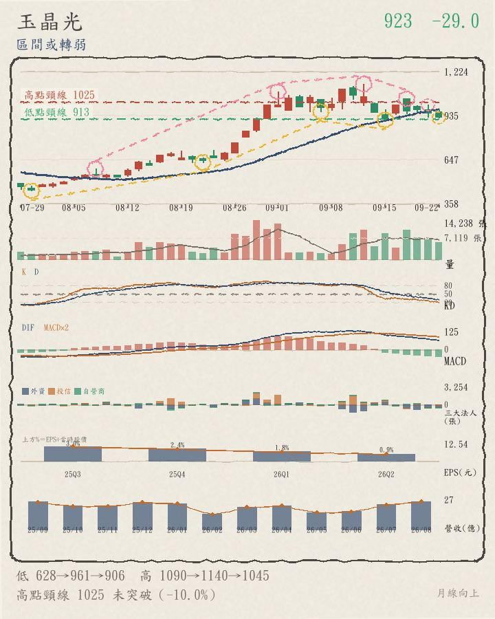
今天收黑、成交量也比平均少、跌破月線 976.95，離高點頸線 1025 還差 10.0%，轉折還沒走出明顯方向。
- 月線位置：收盤 923 在月線 976.95 之下；5 日線 963.4 也在月線之下（短均在下）；月線向上、5 日線走平或向下
- 量能：成交量是 20 日均量的 0.89 倍，比 20 日均量少一些
- 關鍵價位：高點頸線 1025 還沒突破，差 10.0%；最近轉折高點 1045（低於 11.7%）；最近轉折低點 906（高於 1.9%）
- 轉折結構：低點 628、961、906 與高點 1090、1140、1045 都沒有明顯遞增，屬於區間震盪或轉弱；還沒確認的轉折低點 09-22 920；還沒確認的轉折高點 09-21 1005（圖上虛線小圈）
高點墊高、底部不穩 成交金額 55.52 億・全榜第 59 名（上市第 43 名）
好條件 5/8：站上月線、月線向上、頭頭高、相對大盤強、外資買超
不好條件 0/8：無
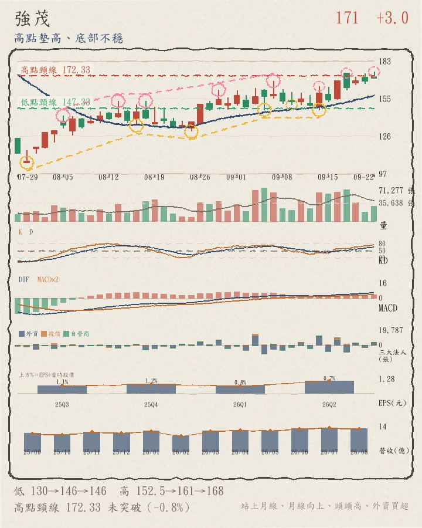
今天收紅、但成交量比平均少、站上月線 156.875，離高點頸線 172.33 還差 0.8%，高點還在墊高（但底部沒同步墊高）。
- 月線位置：收盤 171 在月線 156.875 之上；5 日線 167.8 也在月線之上（短均在上）；月線向上、5 日線向上
- 量能：成交量是 20 日均量的 0.78 倍，比 20 日均量少很多；收紅但量縮，量價背離
- 關鍵價位：高點頸線 172.33 還沒突破，差 0.8%；最近轉折高點 168（高於 1.8%）；最近轉折低點 146（高於 17.1%）
- 轉折結構：高點 152.5、161、168 墊高 10.2%（頭頭高），但低點 129.5、146、146 沒有同步墊高；還沒確認的轉折低點 09-09 150；還沒確認的轉折高點 09-17 174、09-22 175（圖上虛線小圈）
區間或轉弱 成交金額 54.53 億・全榜第 60 名（上市第 44 名）
好條件 0/8：無
不好條件 5/8：今日下跌、相對大盤弱、在月線之下、外資賣超、月線下彎
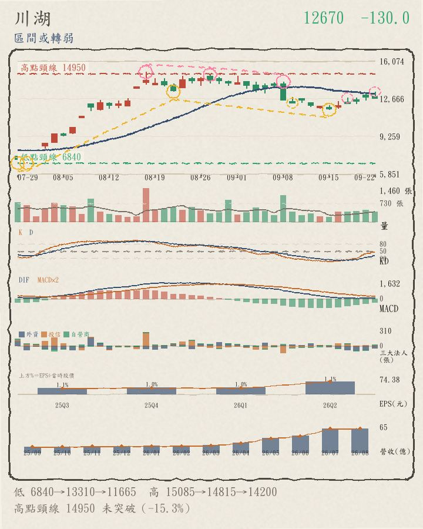
今天收黑、成交量也比平均少、跌破月線 13108.5，離高點頸線 14950 還差 15.3%，轉折還沒走出明顯方向。
- 月線位置：收盤 12670 在月線 13108.5 之下；5 日線 12461 也在月線之下（短均在下）；月線走平或向下、5 日線向上
- 量能：成交量是 20 日均量的 0.92 倍，比 20 日均量少一些
- 關鍵價位：高點頸線 14950 還沒突破，差 15.3%；最近轉折高點 14200（低於 10.8%）；最近轉折低點 11665（高於 8.6%）
- 轉折結構：低點 6840、13310、11665 與高點 15085、14815、14200 都沒有明顯遞增，屬於區間震盪或轉弱；還沒確認的轉折低點 09-09 12285；還沒確認的轉折高點 09-17 12730、09-22 13305（圖上虛線小圈）
剛突破前高 成交金額 54 億・全榜第 61 名（上市第 45 名）
好條件 4/8：站上月線、月線向上、頭頭高、相對大盤強
不好條件 1/8：外資賣超
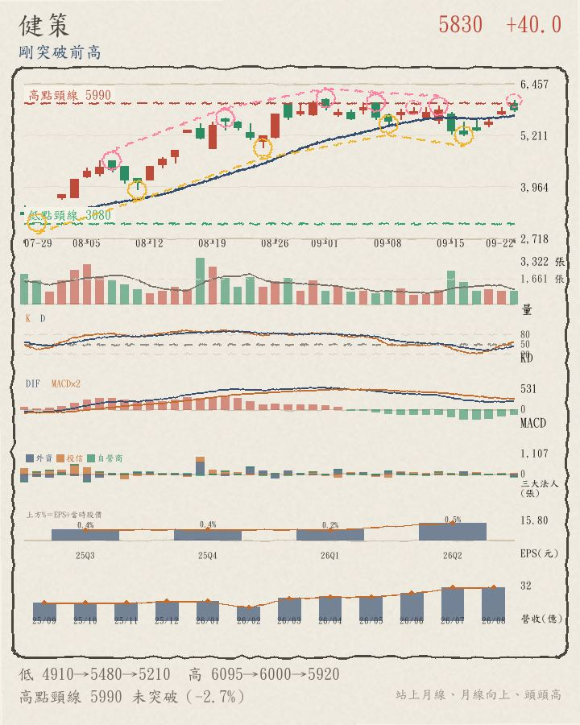
今天收紅、但成交量比平均少、站上月線 5684，離高點頸線 5990 還差 2.7%，高點還在墊高（但底部沒同步墊高）。
- 月線位置：收盤 5830 在月線 5684 之上；5 日線 5548 也在月線之下（短均在下）；月線向上、5 日線走平或向下
- 量能：成交量是 20 日均量的 0.80 倍，比 20 日均量少很多；收紅但量縮，量價背離
- 關鍵價位：高點頸線 5990 還沒突破，差 2.7%；最近轉折高點 5920（低於 1.5%）；最近轉折低點 5210（高於 11.9%）
- 轉折結構：高點 6095、6000、5920 墊高 2.2%（頭頭高），但低點 4910、5480、5210 沒有同步墊高；還沒確認的轉折高點 09-10 5885、09-22 6050（圖上虛線小圈）
剛突破前高 成交金額 51.72 億・全榜第 63 名（上市第 46 名）
好條件 5/8：站上月線、月線向上、頭頭高、突破頸線、外資買超
不好條件 3/8：今日下跌、相對大盤弱、量增下跌（出貨）
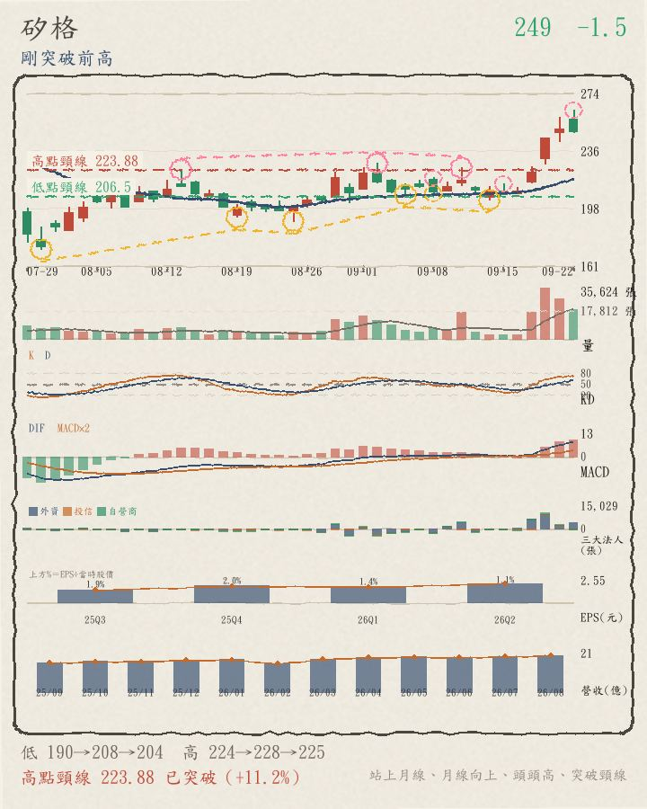
今天帶量收黑、站上月線 217.575，已站上高點頸線 223.88，高點還在墊高（但底部沒同步墊高）。
- 月線位置：收盤 249 在月線 217.575 之上；5 日線 235.3 也在月線之上（短均在上）；月線向上、5 日線向上
- 量能：成交量是 20 日均量的 1.90 倍，比 20 日均量大不少；收黑卻量增，量價背離
- 關鍵價位：高點頸線 223.88 已站上；最近轉折高點 225（高於 10.7%）；最近轉折低點 204（高於 22.1%）
- 轉折結構：高點 224、228、225 墊高 16.9%（頭頭高），但低點 190、207.5、204 沒有同步墊高；還沒確認的轉折低點 09-08 208；還沒確認的轉折高點 09-15 214.5、09-22 263（圖上虛線小圈）
剛突破前高 成交金額 48.27 億・全榜第 65 名（上市第 47 名）
好條件 6/8：站上月線、月線向上、頭頭高、突破頸線、相對大盤強、量價攻擊（收紅＋大量）
不好條件 1/8：外資賣超
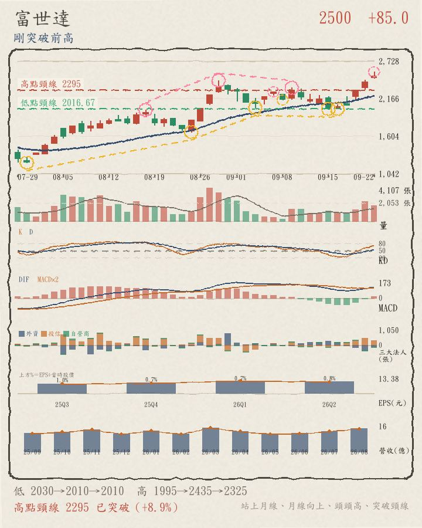
今天帶量收紅、站上月線 2209，已站上高點頸線 2295，高點還在墊高（但底部沒同步墊高）。
- 月線位置：收盤 2500 在月線 2209 之上；5 日線 2269 也在月線之上（短均在上）；月線向上、5 日線向上
- 量能：成交量是 20 日均量的 1.19 倍，比 20 日均量大不少；收紅又量增，量價配合
- 關鍵價位：高點頸線 2295 已站上；最近轉折高點 2325（高於 7.5%）；最近轉折低點 2010（高於 24.4%）
- 轉折結構：高點 1995、2435、2325 墊高 10.3%（頭頭高），但低點 2030、2010、2010 沒有同步墊高；還沒確認的轉折低點 09-08 2145；還沒確認的轉折高點 09-07 2265、09-22 2565（圖上虛線小圈）
上升趨勢（底底高＋頭頭高） 成交金額 46.65 億・全榜第 66 名（上市第 48 名）
好條件 8/8：站上月線、月線向上、底底高、頭頭高、突破頸線、相對大盤強、外資買超、量價攻擊（收紅＋大量）
不好條件 0/8：無
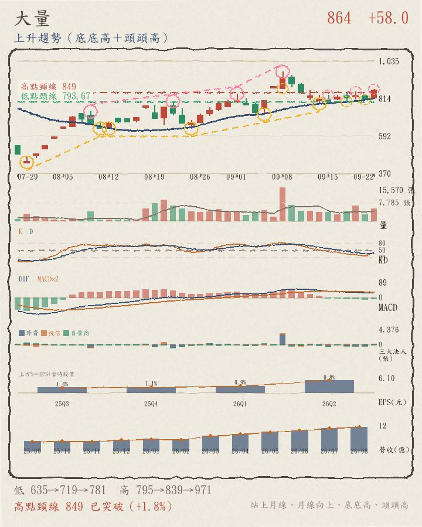
今天帶量收紅、站上月線 814.3，已站上高點頸線 849，轉折結構仍是底底高＋頭頭高。
- 月線位置：收盤 864 在月線 814.3 之上；5 日線 829 也在月線之上（短均在上）；月線向上、5 日線走平或向下
- 量能：成交量是 20 日均量的 1.15 倍，比 20 日均量大不少；收紅又量增，量價配合
- 關鍵價位：高點頸線 849 已站上；最近轉折高點 971（低於 11.0%）；最近轉折低點 781（高於 10.6%）
- 轉折結構：低點 635、719、781 一路墊高 23.0%、高點 795、839、971 也一路墊高 22.1%，是底底高＋頭頭高；還沒確認的轉折低點 09-17 795、09-21 805；還沒確認的轉折高點 09-18 855、09-22 868（圖上虛線小圈）
上升趨勢（底底高＋頭頭高） 成交金額 46.6 億・全榜第 67 名（上市第 49 名）
好條件 2/8：底底高、頭頭高
不好條件 6/8：今日下跌、相對大盤弱、在月線之下、外資賣超、月線下彎、收盤跌破前一日低點
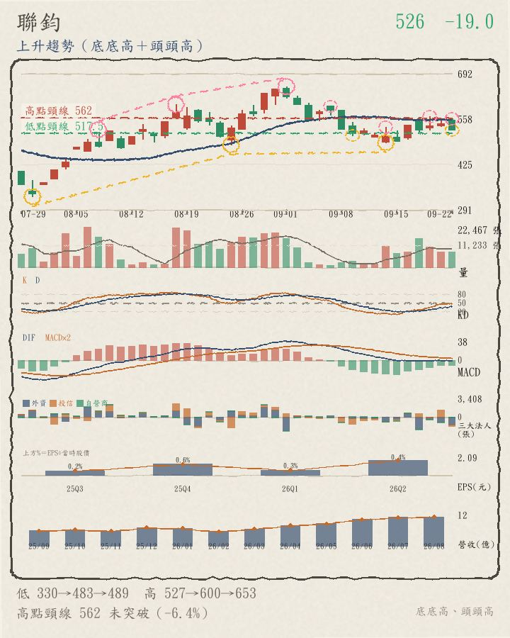
今天收黑、成交量也比平均少、跌破月線 556.875，離高點頸線 562 還差 6.4%，轉折結構仍是底底高＋頭頭高。
- 月線位置：收盤 526 在月線 556.875 之下；5 日線 535 也在月線之下（短均在下）；月線走平或向下、5 日線向上
- 量能：成交量是 20 日均量的 0.91 倍，比 20 日均量少一些
- 關鍵價位：高點頸線 562 還沒突破，差 6.4%；最近轉折高點 653（低於 19.4%）；最近轉折低點 489（高於 7.6%）
- 轉折結構：低點 330、483、489 一路墊高 48.2%、高點 527、600、653 也一路墊高 23.9%，是底底高＋頭頭高；還沒確認的轉折低點 09-09 510、09-22 525；還沒確認的轉折高點 09-18 565、09-22 559（圖上虛線小圈）
剛突破前高 成交金額 42.07 億・全榜第 69 名（上市第 50 名）
好條件 5/8：站上月線、月線向上、頭頭高、相對大盤強、量價攻擊（收紅＋大量）
不好條件 1/8：外資賣超
今天帶量收紅、站上月線 119.7，離高點頸線 135 還差 1.1%，高點還在墊高（但底部沒同步墊高）。
- 月線位置：收盤 133.5 在月線 119.7 之上；5 日線 123.3 也在月線之上（短均在上）；月線向上、5 日線向上
- 量能：成交量是 20 日均量的 8.99 倍，比 20 日均量大不少；收紅又量增，量價配合
- 關鍵價位：高點頸線 135 還沒突破，差 1.1%；最近轉折高點 125（高於 6.8%）；最近轉折低點 109（高於 22.5%）
- 轉折結構：高點 131.5、126.5、125 墊高 10.4%（頭頭高），但低點 111、115、109 沒有同步墊高；還沒確認的轉折低點 09-08 117.5；還沒確認的轉折高點 09-22 138（圖上虛線小圈）
區間或轉弱 成交金額 173.64 億・全榜第 14 名（上櫃第 1 名）
好條件 4/8：站上月線、相對大盤強、外資買超、量價攻擊（收紅＋大量）
不好條件 1/8：月線下彎
今天帶量收紅、站上月線 943.45，離高點頸線 1018.75 還差 4.7%，轉折還沒走出明顯方向。
- 月線位置：收盤 971 在月線 943.45 之上；5 日線 939 也在月線之下（短均在下）；月線走平或向下、5 日線向上
- 量能：成交量是 20 日均量的 2.26 倍，比 20 日均量大不少；收紅又量增，量價配合
- 關鍵價位：高點頸線 1018.75 還沒突破，差 4.7%；最近轉折高點 1015（低於 4.3%）；最近轉折低點 872（高於 11.4%）
- 轉折結構：低點 931、875、872 與高點 1035、1015、1015 都沒有明顯遞增，屬於區間震盪或轉弱；還沒確認的轉折低點 09-08 944、09-18 901；還沒確認的轉折高點 09-17 977、09-22 1010（圖上虛線小圈）
剛突破前高 成交金額 166.17 億・全榜第 17 名（上櫃第 2 名）
好條件 6/8：站上月線、月線向上、頭頭高、相對大盤強、外資買超、量價攻擊（收紅＋大量）
不好條件 0/8：無
今天帶量收紅、站上月線 459.125，離高點頸線 511 還差 2.0%，高點還在墊高（但底部沒同步墊高）。
- 月線位置：收盤 501 在月線 459.125 之上；5 日線 487 也在月線之上（短均在上）；月線向上、5 日線向上
- 量能：成交量是 20 日均量的 1.06 倍，比 20 日均量大一些；收紅又量增，量價配合
- 關鍵價位：高點頸線 511 還沒突破，差 2.0%；最近轉折高點 478（高於 4.8%）；最近轉折低點 420（高於 19.3%）
- 轉折結構：高點 492、492、478 墊高 7.7%（頭頭高），但低點 349.5、438.5、420 沒有同步墊高；還沒確認的轉折低點 09-08 440、09-18 467；還沒確認的轉折高點 09-17 507、09-22 515（圖上虛線小圈）
剛突破前高 成交金額 164.22 億・全榜第 18 名（上櫃第 3 名）
好條件 4/8：站上月線、頭頭高、相對大盤強、量價攻擊（收紅＋大量）
不好條件 2/8：外資賣超、月線下彎
今天帶量收紅、站上月線 1402.5，離高點頸線 1537.5 還差 6.3%，高點還在墊高（但底部沒同步墊高）。
- 月線位置：收盤 1440 在月線 1402.5 之上；5 日線 1396 也在月線之下（短均在下）；月線走平或向下、5 日線向上
- 量能：成交量是 20 日均量的 1.69 倍，比 20 日均量大不少；收紅又量增，量價配合
- 關鍵價位：高點頸線 1537.5 還沒突破，差 6.3%；最近轉折高點 1460（低於 1.4%）；最近轉折低點 1275（高於 12.9%）
- 轉折結構：高點 1565、1430、1460 墊高 3.4%（頭頭高），但低點 1395、1295、1275 沒有同步墊高；還沒確認的轉折低點 09-09 1315、09-14 1320；還沒確認的轉折高點 09-17 1460、09-22 1510（圖上虛線小圈）
剛突破前高 成交金額 121.86 億・全榜第 25 名（上櫃第 4 名）
好條件 7/8：站上月線、月線向上、頭頭高、突破頸線、相對大盤強、外資買超、量價攻擊（收紅＋大量）
不好條件 0/8：無
今天帶量收紅、站上月線 109.95，已站上高點頸線 118，高點還在墊高（但底部沒同步墊高）。
- 月線位置：收盤 119 在月線 109.95 之上；5 日線 114.5 也在月線之上（短均在上）；月線向上、5 日線向上
- 量能：成交量是 20 日均量的 2.30 倍，比 20 日均量大不少；收紅又量增，量價配合
- 關鍵價位：高點頸線 118 已站上；最近轉折高點 119（高於 0.0%）；最近轉折低點 100（高於 19.0%）
- 轉折結構：高點 131、117.5、119 墊高 5.0%（頭頭高），但低點 103.5、104、100 沒有同步墊高；還沒確認的轉折低點 09-08 109；還沒確認的轉折高點 09-17 117.5、09-22 125（圖上虛線小圈）
剛突破前高 成交金額 118.97 億・全榜第 27 名（上櫃第 5 名）
好條件 4/8：站上月線、月線向上、頭頭高、突破頸線
不好條件 5/8：今日下跌、相對大盤弱、量增下跌（出貨）、外資賣超、收盤跌破前一日低點
今天帶量收黑、站上月線 194.675，已站上高點頸線 203，高點還在墊高（但底部沒同步墊高）。
- 月線位置：收盤 219 在月線 194.675 之上；5 日線 217.8 也在月線之上（短均在上）；月線向上、5 日線向上
- 量能：成交量是 20 日均量的 1.14 倍，比 20 日均量大一些；收黑卻量增，量價背離
- 關鍵價位：高點頸線 203 已站上；最近轉折高點 203（高於 7.9%）；最近轉折低點 171（高於 28.1%）
- 轉折結構：高點 171、203、203 墊高 14.8%（頭頭高），但低點 155.5、152、171 沒有同步墊高；還沒確認的轉折低點 09-22 218；還沒確認的轉折高點 09-22 233（圖上虛線小圈）
區間或轉弱 成交金額 108.17 億・全榜第 29 名（上櫃第 6 名）
好條件 2/8：月線向上、外資買超
不好條件 6/8：跌破前低、今日下跌、相對大盤弱、在月線之下、量增下跌（出貨）、收盤跌破前一日低點
今天帶量收黑、跌破月線 5405.25，跌破前一個轉折低點（高點頸線 5770 還在收盤上方），轉折還沒走出明顯方向。
- 月線位置：收盤 5345 在月線 5405.25 之下；5 日線 5548 也在月線之上（短均在上）；月線向上、5 日線走平或向下
- 量能：成交量是 20 日均量的 2.22 倍，比 20 日均量大不少；收黑卻量增，量價背離
- 關鍵價位：高點頸線 5770 還沒突破、還在收盤上方 7.4%；最近轉折高點 5860（低於 8.8%）；最近轉折低點 5365（低於 0.4%）
- 轉折結構：低點 5000、4730、5365 與高點 5585、6060、5860 都沒有明顯遞增，屬於區間震盪或轉弱；還沒確認的轉折低點 09-17 5485、09-22 5090；還沒確認的轉折高點 09-15 5800、09-21 5850（圖上虛線小圈）
剛突破前高 成交金額 107.46 億・全榜第 30 名（上櫃第 7 名）
好條件 6/8：站上月線、月線向上、頭頭高、相對大盤強、外資買超、量價攻擊（收紅＋大量）
不好條件 0/8：無
今天帶量收紅、站上月線 2070.25，離高點頸線 2282.5 還差 4.3%，高點還在墊高（但底部沒同步墊高）。
- 月線位置：收盤 2185 在月線 2070.25 之上；5 日線 2086 也在月線之上（短均在上）；月線向上、5 日線向上
- 量能：成交量是 20 日均量的 1.41 倍，比 20 日均量大不少；收紅又量增，量價配合
- 關鍵價位：高點頸線 2282.5 還沒突破，差 4.3%；最近轉折高點 2160（高於 1.2%）；最近轉折低點 1900（高於 15.0%）
- 轉折結構：高點 2215、2195、2160 墊高 3.7%（頭頭高），但低點 1905、1970、1900 沒有同步墊高；還沒確認的轉折高點 09-22 2240（圖上虛線小圈）
底部墊高、未過前高 成交金額 86.99 億・全榜第 37 名（上櫃第 8 名）
好條件 4/8：站上月線、月線向上、底底高、相對大盤強
不好條件 1/8：外資賣超
今天收紅、但成交量比平均少、站上月線 119.874，離高點頸線 129.25 還差 5.6%，底部還在墊高（但高點沒同步創高）。
- 月線位置：收盤 122 在月線 119.874 之上；5 日線 118.6 也在月線之下（短均在下）；月線向上、5 日線走平或向下
- 量能：成交量是 20 日均量的 0.92 倍，比 20 日均量少一些；收紅但量縮，量價背離
- 關鍵價位：高點頸線 129.25 還沒突破，差 5.6%；最近轉折高點 135（低於 9.6%）；最近轉折低點 111（高於 9.9%）
- 轉折結構：低點 56.2856、108.571、111 墊高 97.2%（底底高），但高點 95.1427、89.4284、135 沒有同步創高；還沒確認的轉折低點 09-15 114.5、09-22 120；還沒確認的轉折高點 09-16 121.5、09-22 129.5（圖上虛線小圈）
剛突破前高 成交金額 84.75 億・全榜第 38 名（上櫃第 9 名）
好條件 6/8：站上月線、月線向上、頭頭高、突破頸線、相對大盤強、量價攻擊（收紅＋大量）
不好條件 1/8：外資賣超
今天帶量收紅、站上月線 1352.25，已站上高點頸線 1080，高點還在墊高（但底部沒同步墊高）。
- 月線位置：收盤 1600 在月線 1352.25 之上；5 日線 1469 也在月線之上（短均在上）；月線向上、5 日線向上
- 量能：成交量是 20 日均量的 1.30 倍，比 20 日均量大不少；收紅又量增，量價配合
- 關鍵價位：高點頸線 1080 已站上；最近轉折高點 1505（高於 6.3%）；最近轉折低點 1240（高於 29.0%）
- 轉折結構：高點 1080、1080、1505 墊高 8.3%（頭頭高），但低點 955、1300、1240 沒有同步墊高；還沒確認的轉折高點 09-10 1440、09-22 1630（圖上虛線小圈）
高點墊高、底部不穩 成交金額 80.29 億・全榜第 40 名（上櫃第 10 名）
好條件 6/8：站上月線、月線向上、頭頭高、相對大盤強、外資買超、量價攻擊（收紅＋大量）
不好條件 0/8：無
今天帶量收紅、站上月線 430.2，離高點頸線 491.5 還差 0.9%，高點還在墊高（但底部沒同步墊高）。
- 月線位置：收盤 487 在月線 430.2 之上；5 日線 445.5 也在月線之上（短均在上）；月線向上、5 日線走平或向下
- 量能：成交量是 20 日均量的 1.34 倍，比 20 日均量大不少；收紅又量增，量價配合
- 關鍵價位：高點頸線 491.5 還沒突破，差 0.9%；最近轉折高點 496（低於 1.8%）；最近轉折低點 407（高於 19.7%）
- 轉折結構：高點 328.5、431、496 墊高 51.0%（頭頭高），但低點 288、289、407 沒有同步墊高；還沒確認的轉折低點 09-18 418.5；還沒確認的轉折高點 09-17 445、09-22 487（圖上虛線小圈）
區間或轉弱 成交金額 70.52 億・全榜第 45 名（上櫃第 11 名）
好條件 3/8：站上月線、月線向上、外資買超
不好條件 4/8：今日下跌、相對大盤弱、量增下跌（出貨）、收盤跌破前一日低點
今天帶量收黑、站上月線 587.95，離高點頸線 633.75 還差 4.5%，轉折還沒走出明顯方向。
- 月線位置：收盤 605 在月線 587.95 之上；5 日線 587.4 也在月線之下（短均在下）；月線向上、5 日線向上
- 量能：成交量是 20 日均量的 1.26 倍，比 20 日均量大不少；收黑卻量增，量價背離
- 關鍵價位：高點頸線 633.75 還沒突破，差 4.5%；最近轉折高點 658（低於 8.1%）；最近轉折低點 501（高於 20.8%）
- 轉折結構：低點 495、572、501 與高點 654、635、658 都沒有明顯遞增，屬於區間震盪或轉弱；還沒確認的轉折低點 09-08 590、09-22 605；還沒確認的轉折高點 09-07 635、09-21 650（圖上虛線小圈）
高點墊高、底部不穩 成交金額 70.32 億・全榜第 46 名（上櫃第 12 名）
好條件 7/8：站上月線、月線向上、頭頭高、突破頸線、相對大盤強、外資買超、量價攻擊（收紅＋大量）
不好條件 0/8：無
今天帶量收紅、站上月線 17926，已站上高點頸線 18336.4，高點還在墊高（但底部沒同步墊高）。
- 月線位置：收盤 20905 在月線 17926 之上；5 日線 19308 也在月線之上（短均在上）；月線向上、5 日線向上
- 量能：成交量是 20 日均量的 1.22 倍，比 20 日均量大不少；收紅又量增，量價配合
- 關鍵價位：高點頸線 18336.4 已站上；最近轉折高點 19795（高於 5.6%）；最近轉折低點 17170（高於 21.8%）
- 轉折結構：高點 16210、18600、19795 墊高 22.1%（頭頭高），但低點 15930、14600、17170 沒有同步墊高；還沒確認的轉折高點 09-22 21800（圖上虛線小圈）
剛突破前高 成交金額 64.33 億・全榜第 50 名（上櫃第 13 名）
好條件 7/8：站上月線、月線向上、頭頭高、突破頸線、相對大盤強、外資買超、量價攻擊（收紅＋大量）
不好條件 0/8：無
今天帶量收紅、站上月線 181.6，已站上高點頸線 187.9，高點還在墊高（但底部沒同步墊高）。
- 月線位置：收盤 195 在月線 181.6 之上；5 日線 186.9 也在月線之上（短均在上）；月線向上、5 日線向上
- 量能：成交量是 20 日均量的 2.79 倍，比 20 日均量大不少；收紅又量增，量價配合
- 關鍵價位：高點頸線 187.9 已站上；最近轉折高點 187.5（高於 4.0%）；最近轉折低點 170（高於 14.7%）
- 轉折結構：高點 187.5、187.5、187.5 墊高 7.7%（頭頭高），但低點 173.5、173、170 沒有同步墊高；還沒確認的轉折低點 09-08 179.5、09-18 180.5；還沒確認的轉折高點 09-17 191.5、09-22 202（圖上虛線小圈）
底部墊高、突破前高 成交金額 63.12 億・全榜第 51 名（上櫃第 14 名）
好條件 2/8：底底高、頭頭高
不好條件 4/8：今日下跌、相對大盤弱、在月線之下、外資賣超
今天收黑、成交量也比平均少、跌破月線 3026，離高點頸線 2910 還差 2.9%，轉折結構仍是底底高＋頭頭高。
- 月線位置：收盤 2825 在月線 3026 之下；5 日線 2821 也在月線之下（短均在下）；月線走平或向下、5 日線向上
- 量能：成交量是 20 日均量的 0.61 倍，比 20 日均量少很多
- 關鍵價位：高點頸線 2910 還沒突破，差 2.9%；最近轉折高點 2930（低於 3.6%）；最近轉折低點 2650（高於 6.6%）
- 轉折結構：低點 1335、1450、2650 一路墊高 98.5%、高點 3065、3600、2930 也一路墊高 0.7%，是底底高＋頭頭高；還沒確認的轉折高點 09-17 2930、09-22 2950（圖上虛線小圈）
高點墊高、底部不穩 成交金額 61.37 億・全榜第 53 名（上櫃第 15 名）
好條件 5/8：站上月線、月線向上、頭頭高、突破頸線、外資買超
不好條件 3/8：今日下跌、相對大盤弱、量增下跌（出貨）
今天帶量收黑、站上月線 236.225，已站上高點頸線 239.83，高點還在墊高（但底部沒同步墊高）。
- 月線位置：收盤 276.5 在月線 236.225 之上；5 日線 259.3 也在月線之上（短均在上）；月線向上、5 日線向上
- 量能：成交量是 20 日均量的 2.31 倍，比 20 日均量大不少；收黑卻量增，量價背離
- 關鍵價位：高點頸線 239.83 已站上；最近轉折高點 251.5（高於 9.9%）；最近轉折低點 220（高於 25.7%）
- 轉折結構：高點 238、239.5、251.5 墊高 5.7%（頭頭高），但低點 202、222.5、220 沒有同步墊高；還沒確認的轉折高點 09-08 242、09-22 289.5（圖上虛線小圈）
高點墊高、底部不穩 成交金額 56.26 億・全榜第 58 名（上櫃第 16 名）
好條件 7/8：站上月線、月線向上、頭頭高、突破頸線、相對大盤強、外資買超、量價攻擊（收紅＋大量）
不好條件 0/8：無
今天帶量收紅、站上月線 157.225，已站上高點頸線 159.38，高點還在墊高（但底部沒同步墊高）。
- 月線位置：收盤 173 在月線 157.225 之上；5 日線 168.1 也在月線之上（短均在上）；月線向上、5 日線向上
- 量能：成交量是 20 日均量的 2.42 倍，比 20 日均量大不少；收紅又量增，量價配合
- 關鍵價位：高點頸線 159.38 已站上；最近轉折高點 163（高於 6.1%）；最近轉折低點 152.5（高於 13.4%）
- 轉折結構：高點 157、158、163 墊高 3.8%（頭頭高），但低點 146.5、147、152.5 沒有同步墊高；還沒確認的轉折低點 09-16 153、09-21 166.5；還沒確認的轉折高點 09-18 174、09-22 181.5（圖上虛線小圈）
上升趨勢（底底高＋頭頭高） 成交金額 52.56 億・全榜第 62 名（上櫃第 17 名）
好條件 6/8：站上月線、月線向上、底底高、頭頭高、相對大盤強、量價攻擊（收紅＋大量）
不好條件 1/8：外資賣超
今天帶量收紅、站上月線 3288，轉折結構仍是底底高＋頭頭高。
- 月線位置：收盤 3700 在月線 3288 之上；5 日線 3427 也在月線之上（短均在上）；月線向上、5 日線走平或向下
- 量能：成交量是 20 日均量的 1.59 倍，比 20 日均量大不少；收紅又量增，量價配合
- 關鍵價位：最近轉折高點 3935（低於 6.0%）；最近轉折低點 3165（高於 16.9%）
- 轉折結構：低點 2235、2570、3165 一路墊高 41.6%、高點 2975、3100、3935 也一路墊高 32.3%，是底底高＋頭頭高；還沒確認的轉折高點 09-22 3775（圖上虛線小圈）
上升趨勢（底底高＋頭頭高） 成交金額 48.56 億・全榜第 64 名（上櫃第 18 名）
好條件 5/8：站上月線、月線向上、底底高、頭頭高、外資買超
不好條件 3/8：今日下跌、相對大盤弱、收盤跌破前一日低點
今天收黑、成交量也比平均少、站上月線 273.45，離高點頸線 325.67 還差 7.0%，轉折結構仍是底底高＋頭頭高。
- 月線位置：收盤 303 在月線 273.45 之上；5 日線 308.7 也在月線之上（短均在上）；月線向上、5 日線向上
- 量能：成交量是 20 日均量的 0.80 倍，比 20 日均量少很多
- 關鍵價位：高點頸線 325.67 還沒突破，差 7.0%；最近轉折高點 270.5（高於 12.0%）；最近轉折低點 265.5（高於 14.1%）
- 轉折結構：低點 189.5、190.5、265.5 一路墊高 40.1%、高點 178、230、270.5 也一路墊高 52.0%，是底底高＋頭頭高；還沒確認的轉折低點 09-17 295、09-22 300；還沒確認的轉折高點 09-17 325、09-22 331（圖上虛線小圈）
底部墊高、突破前高 成交金額 45.8 億・全榜第 68 名（上櫃第 19 名）
好條件 7/8：站上月線、月線向上、底底高、頭頭高、突破頸線、相對大盤強、量價攻擊（收紅＋大量）
不好條件 1/8：外資賣超
今天帶量收紅、站上月線 2639.25，已站上高點頸線 3052.5，轉折結構仍是底底高＋頭頭高。
- 月線位置：收盤 3110 在月線 2639.25 之上；5 日線 2839 也在月線之上（短均在上）；月線向上、5 日線向上
- 量能：成交量是 20 日均量的 1.08 倍，比 20 日均量大一些；收紅又量增，量價配合
- 關鍵價位：高點頸線 3052.5 已站上；最近轉折高點 2875（高於 8.2%）；最近轉折低點 2530（高於 22.9%）
- 轉折結構：低點 1995、2090、2530 一路墊高 26.8%、高點 2825、2720、2875 也一路墊高 8.2%，是底底高＋頭頭高；還沒確認的轉折高點 09-14 2770、09-22 3110（圖上虛線小圈）